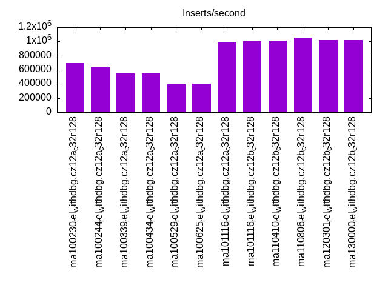
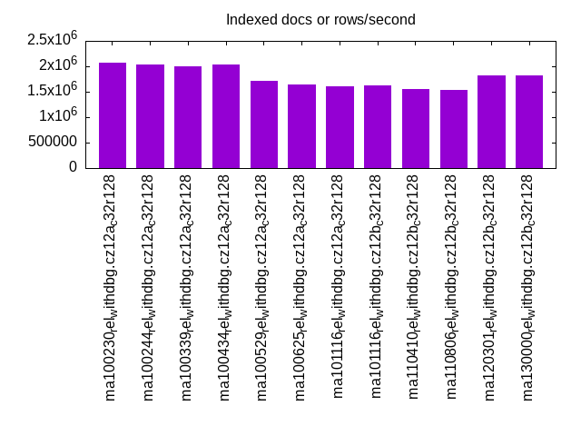
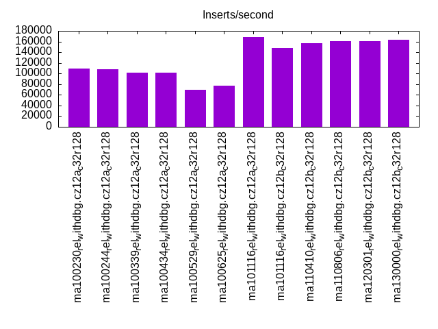
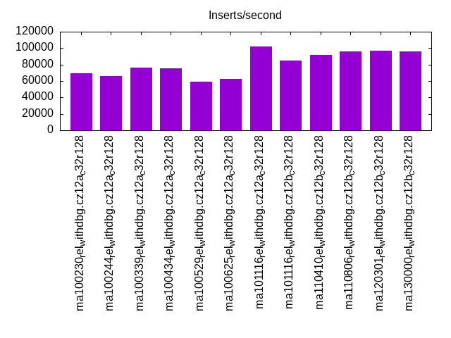
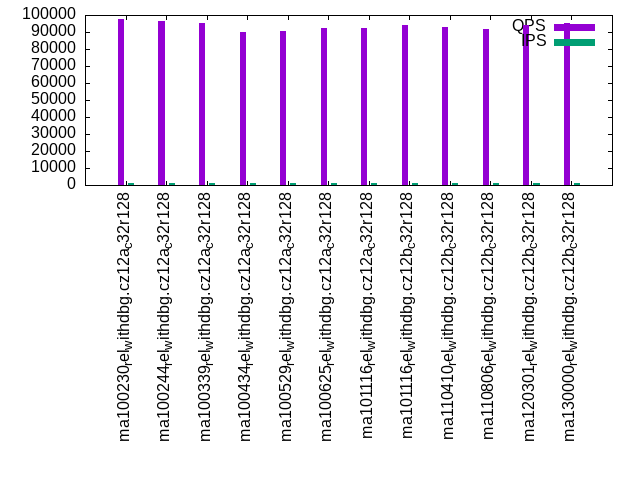
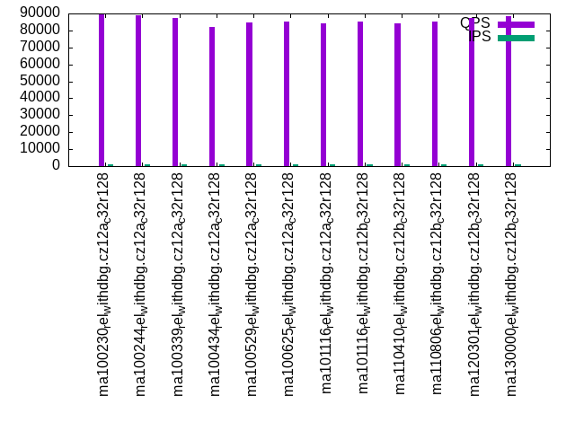
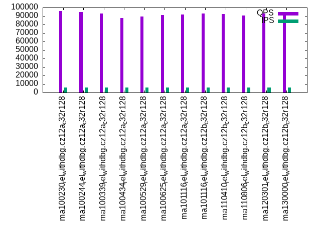
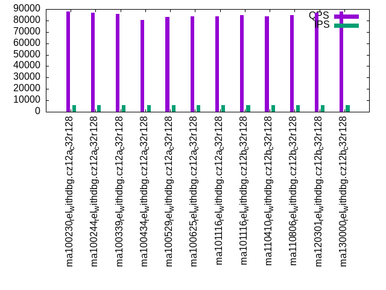
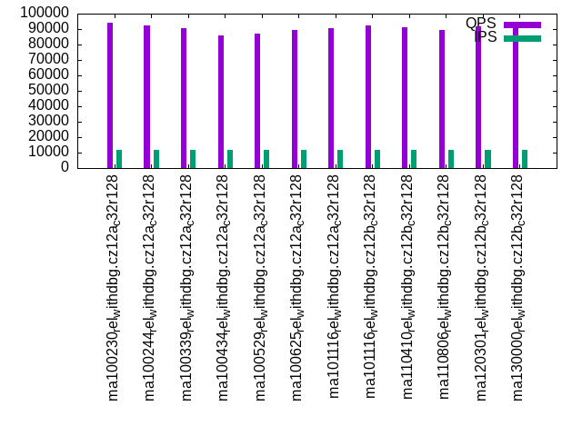
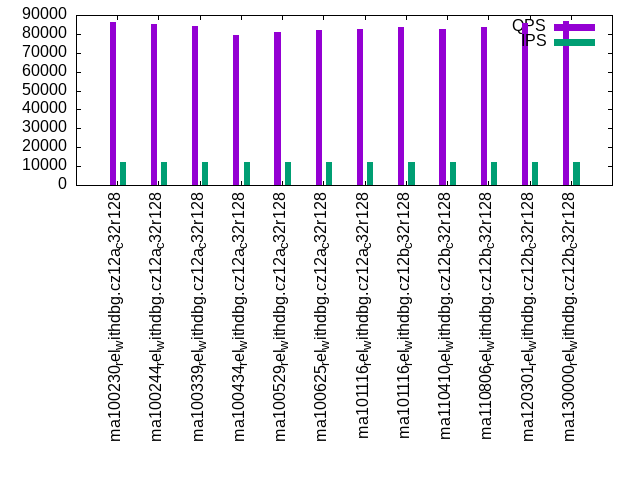

This is a report for the insert benchmark with 120M docs and 12 client(s). It is generated by scripts (bash, awk, sed) and Tufte might not be impressed. An overview of the insert benchmark is here and a short update is here. Below, by DBMS, I mean DBMS+version.config. An example is my8020.c10b40 where my means MySQL, 8020 is version 8.0.20 and c10b40 is the name for the configuration file.
The test server has 32 cores, 128G RAM and 1 NVMe device. The benchmark was run with 12 clients and there were 1 or 3 connections per client (1 for queries or inserts without rate limits, 1+1 for rate limited inserts+deletes). It uses 8 tables with a table per client. It loads 10M rows per table without secondary indexes, creates 3 secondary indexes per table, then inserts 16m+4m rows per table with a delete per insert to avoid growing the table. It then does 6 read+write tests for 1800s each that do queries as fast as possible with 100,100,500,500,1000,1000 inserts/s and the same for deletes/s per client concurrent with the queries. The database is cached. Clients and the DBMS share one server.
The tested DBMS are:
The numbers are inserts/s for l.i0, l.i1 and l.i2, indexed docs (or rows) /s for l.x and queries/s for qr100, qp100 thru qr1000, qp1000" The values are the average rate over the entire test for inserts (IPS) and queries (QPS). The range of values for IPS and QPS is split into 3 parts: bottom 25%, middle 50%, top 25%. Values in the bottom 25% have a red background, values in the top 25% have a green background and values in the middle have no color. A gray background is used for values that can be ignored because the DBMS did not sustain the target insert rate. Red backgrounds are not used when the minimum value is within 80% of the max value.
| dbms | l.i0 | l.x | l.i1 | l.i2 | qr100 | qp100 | qr500 | qp500 | qr1000 | qp1000 |
|---|---|---|---|---|---|---|---|---|---|---|
| ma100230_rel_withdbg.cz12a_c32r128 | 693642 | 2068967 | 109153 | 69565 | 97832 | 89500 | 95757 | 87749 | 93930 | 86285 |
| ma100244_rel_withdbg.cz12a_c32r128 | 634921 | 2033900 | 108597 | 66390 | 96664 | 88750 | 94426 | 86969 | 92291 | 85385 |
| ma100339_rel_withdbg.cz12a_c32r128 | 550459 | 2000002 | 101159 | 76190 | 95122 | 87271 | 93212 | 85716 | 90501 | 84020 |
| ma100434_rel_withdbg.cz12a_c32r128 | 550459 | 2033900 | 101641 | 75829 | 89915 | 81992 | 87936 | 80558 | 85735 | 79311 |
| ma100529_rel_withdbg.cz12a_c32r128 | 390879 | 1714287 | 69164 | 59113 | 90616 | 84558 | 89134 | 83036 | 87177 | 81086 |
| ma100625_rel_withdbg.cz12a_c32r128 | 404040 | 1643837 | 77482 | 62176 | 92248 | 85110 | 91194 | 83828 | 89352 | 82174 |
| ma101116_rel_withdbg.cz12a_c32r128 | 991736 | 1600001 | 167979 | 102128 | 92223 | 84310 | 91656 | 83790 | 90728 | 82750 |
| ma101116_rel_withdbg.cz12b_c32r128 | 1000000 | 1621623 | 148262 | 84507 | 93926 | 85486 | 93143 | 84870 | 92132 | 83729 |
| ma110410_rel_withdbg.cz12b_c32r128 | 1008403 | 1558443 | 156991 | 91428 | 93125 | 84005 | 92140 | 83479 | 91413 | 82527 |
| ma110806_rel_withdbg.cz12b_c32r128 | 1052632 | 1538463 | 160669 | 95618 | 91479 | 85215 | 90586 | 84612 | 89687 | 83709 |
| ma120301_rel_withdbg.cz12b_c32r128 | 1016949 | 1818183 | 161344 | 96579 | 93888 | 87344 | 92881 | 86635 | 91974 | 85680 |
| ma130000_rel_withdbg.cz12b_c32r128 | 1016949 | 1818183 | 163543 | 95618 | 95093 | 88479 | 94227 | 87942 | 93375 | 86873 |
This table has relative throughput, throughput for the DBMS relative to the DBMS in the first line, using the absolute throughput from the previous table. Values less than 0.95 have a yellow background. Values greater than 1.05 have a blue background.
| dbms | l.i0 | l.x | l.i1 | l.i2 | qr100 | qp100 | qr500 | qp500 | qr1000 | qp1000 |
|---|---|---|---|---|---|---|---|---|---|---|
| ma100230_rel_withdbg.cz12a_c32r128 | 1.00 | 1.00 | 1.00 | 1.00 | 1.00 | 1.00 | 1.00 | 1.00 | 1.00 | 1.00 |
| ma100244_rel_withdbg.cz12a_c32r128 | 0.92 | 0.98 | 0.99 | 0.95 | 0.99 | 0.99 | 0.99 | 0.99 | 0.98 | 0.99 |
| ma100339_rel_withdbg.cz12a_c32r128 | 0.79 | 0.97 | 0.93 | 1.10 | 0.97 | 0.98 | 0.97 | 0.98 | 0.96 | 0.97 |
| ma100434_rel_withdbg.cz12a_c32r128 | 0.79 | 0.98 | 0.93 | 1.09 | 0.92 | 0.92 | 0.92 | 0.92 | 0.91 | 0.92 |
| ma100529_rel_withdbg.cz12a_c32r128 | 0.56 | 0.83 | 0.63 | 0.85 | 0.93 | 0.94 | 0.93 | 0.95 | 0.93 | 0.94 |
| ma100625_rel_withdbg.cz12a_c32r128 | 0.58 | 0.79 | 0.71 | 0.89 | 0.94 | 0.95 | 0.95 | 0.96 | 0.95 | 0.95 |
| ma101116_rel_withdbg.cz12a_c32r128 | 1.43 | 0.77 | 1.54 | 1.47 | 0.94 | 0.94 | 0.96 | 0.95 | 0.97 | 0.96 |
| ma101116_rel_withdbg.cz12b_c32r128 | 1.44 | 0.78 | 1.36 | 1.21 | 0.96 | 0.96 | 0.97 | 0.97 | 0.98 | 0.97 |
| ma110410_rel_withdbg.cz12b_c32r128 | 1.45 | 0.75 | 1.44 | 1.31 | 0.95 | 0.94 | 0.96 | 0.95 | 0.97 | 0.96 |
| ma110806_rel_withdbg.cz12b_c32r128 | 1.52 | 0.74 | 1.47 | 1.37 | 0.94 | 0.95 | 0.95 | 0.96 | 0.95 | 0.97 |
| ma120301_rel_withdbg.cz12b_c32r128 | 1.47 | 0.88 | 1.48 | 1.39 | 0.96 | 0.98 | 0.97 | 0.99 | 0.98 | 0.99 |
| ma130000_rel_withdbg.cz12b_c32r128 | 1.47 | 0.88 | 1.50 | 1.37 | 0.97 | 0.99 | 0.98 | 1.00 | 0.99 | 1.01 |
This lists the average rate of inserts/s for the tests that do inserts concurrent with queries. For such tests the query rate is listed in the table above. The read+write tests are setup so that the insert rate should match the target rate every second. Cells that are not at least 95% of the target have a red background to indicate a failure to satisfy the target.
| dbms | qr100.L1 | qp100.L2 | qr500.L3 | qp500.L4 | qr1000.L5 | qp1000.L6 |
|---|---|---|---|---|---|---|
| ma100230_rel_withdbg.cz12a_c32r128 | 1193 | 1193 | 5964 | 5960 | 11927 | 11927 |
| ma100244_rel_withdbg.cz12a_c32r128 | 1193 | 1193 | 5964 | 5960 | 11927 | 11920 |
| ma100339_rel_withdbg.cz12a_c32r128 | 1193 | 1192 | 5960 | 5964 | 11907 | 11920 |
| ma100434_rel_withdbg.cz12a_c32r128 | 1192 | 1192 | 5964 | 5960 | 11927 | 11927 |
| ma100529_rel_withdbg.cz12a_c32r128 | 1193 | 1193 | 5964 | 5960 | 11927 | 11920 |
| ma100625_rel_withdbg.cz12a_c32r128 | 1193 | 1193 | 5964 | 5960 | 11927 | 11920 |
| ma101116_rel_withdbg.cz12a_c32r128 | 1192 | 1192 | 5960 | 5964 | 11927 | 11927 |
| ma101116_rel_withdbg.cz12b_c32r128 | 1193 | 1193 | 5964 | 5964 | 11920 | 11920 |
| ma110410_rel_withdbg.cz12b_c32r128 | 1192 | 1192 | 5960 | 5964 | 11927 | 11927 |
| ma110806_rel_withdbg.cz12b_c32r128 | 1193 | 1193 | 5964 | 5960 | 11927 | 11920 |
| ma120301_rel_withdbg.cz12b_c32r128 | 1193 | 1193 | 5964 | 5960 | 11927 | 11927 |
| ma130000_rel_withdbg.cz12b_c32r128 | 1193 | 1193 | 5964 | 5960 | 11927 | 11927 |
| target | 1200 | 1200 | 6000 | 6000 | 12000 | 12000 |
l.i0: load without secondary indexes. Graphs for performance per 1-second interval are here.
Average throughput:

Insert response time histogram: each cell has the percentage of responses that take <= the time in the header and max is the max response time in seconds. For the max column values in the top 25% of the range have a red background and in the bottom 25% of the range have a green background. The red background is not used when the min value is within 80% of the max value.
| dbms | 256us | 1ms | 4ms | 16ms | 64ms | 256ms | 1s | 4s | 16s | gt | max |
|---|---|---|---|---|---|---|---|---|---|---|---|
| ma100230_rel_withdbg.cz12a_c32r128 | 4.827 | 95.007 | 0.114 | 0.004 | 0.048 | 0.130 | |||||
| ma100244_rel_withdbg.cz12a_c32r128 | 4.494 | 95.320 | 0.131 | 0.006 | 0.048 | 0.123 | |||||
| ma100339_rel_withdbg.cz12a_c32r128 | 2.241 | 97.446 | 0.263 | 0.003 | 0.048 | 0.126 | |||||
| ma100434_rel_withdbg.cz12a_c32r128 | 2.233 | 97.433 | 0.283 | 0.002 | 0.048 | 0.130 | |||||
| ma100529_rel_withdbg.cz12a_c32r128 | 2.602 | 96.052 | 0.949 | 0.340 | 0.057 | 0.119 | |||||
| ma100625_rel_withdbg.cz12a_c32r128 | 2.426 | 96.718 | 0.804 | 0.002 | 0.050 | 0.214 | |||||
| ma101116_rel_withdbg.cz12a_c32r128 | 94.967 | 4.952 | 0.026 | 0.006 | 0.049 | 0.252 | |||||
| ma101116_rel_withdbg.cz12b_c32r128 | 96.159 | 3.756 | 0.030 | 0.005 | 0.049 | 0.226 | |||||
| ma110410_rel_withdbg.cz12b_c32r128 | 96.056 | 3.864 | 0.025 | 0.006 | 0.049 | 0.250 | |||||
| ma110806_rel_withdbg.cz12b_c32r128 | 98.113 | 1.808 | 0.025 | 0.006 | 0.048 | 0.237 | |||||
| ma120301_rel_withdbg.cz12b_c32r128 | 96.227 | 3.691 | 0.028 | 0.005 | 0.049 | 0.223 | |||||
| ma130000_rel_withdbg.cz12b_c32r128 | 96.258 | 3.657 | 0.031 | 0.006 | 0.049 | 0.214 |
Performance metrics for the DBMS listed above. Some are normalized by throughput, others are not. Legend for results is here.
ips qps rps rmbps wps wmbps rpq rkbpq wpi wkbpi csps cpups cspq cpupq dbgb1 dbgb2 rss maxop p50 p99 tag 693642 0 0 0.0 2285.5 187.6 0.000 0.000 0.003 0.277 85642 42.9 0.123 20 8.0 108.8 11.2 0.130 64792 56093 ma100230_rel_withdbg.cz12a_c32r128 634921 0 0 0.0 2565.2 184.0 0.000 0.000 0.004 0.297 78546 40.9 0.124 21 8.0 108.8 11.8 0.123 57693 50794 ma100244_rel_withdbg.cz12a_c32r128 550459 0 0 0.0 1930.2 161.7 0.000 0.000 0.004 0.301 69816 59.6 0.127 35 8.0 109.0 12.2 0.126 49794 43795 ma100339_rel_withdbg.cz12a_c32r128 550459 0 0 0.0 1692.9 154.3 0.000 0.000 0.003 0.287 69497 59.7 0.126 35 8.0 109.0 NA 0.130 49794 43491 ma100434_rel_withdbg.cz12a_c32r128 390879 0 0 0.0 3360.0 129.9 0.000 0.000 0.009 0.340 744677 49.8 1.905 41 8.0 109.4 11.6 0.119 33496 28896 ma100529_rel_withdbg.cz12a_c32r128 404040 0 0 0.0 1184.1 92.4 0.000 0.000 0.003 0.234 761604 52.0 1.885 41 8.0 108.8 10.0 0.214 34196 29396 ma100625_rel_withdbg.cz12a_c32r128 991736 0 0 0.0 2391.7 211.3 0.000 0.000 0.002 0.218 143987 42.8 0.145 14 8.0 108.8 9.9 0.252 103986 91689 ma101116_rel_withdbg.cz12a_c32r128 1000000 0 0 0.0 2452.9 212.2 0.000 0.000 0.002 0.217 142783 42.3 0.143 14 8.0 108.8 10.0 0.226 105088 91790 ma101116_rel_withdbg.cz12b_c32r128 1008403 0 0 0.0 2425.8 211.8 0.000 0.000 0.002 0.215 146974 42.6 0.146 14 8.0 108.8 10.0 0.250 104887 92689 ma110410_rel_withdbg.cz12b_c32r128 1052632 0 0 0.0 2487.5 220.3 0.000 0.000 0.002 0.214 149359 43.0 0.142 13 8.0 108.8 10.0 0.237 111086 97288 ma110806_rel_withdbg.cz12b_c32r128 1016949 0 0 0.0 2371.5 215.9 0.000 0.000 0.002 0.217 150276 44.2 0.148 14 8.0 108.8 10.0 0.223 102487 90789 ma120301_rel_withdbg.cz12b_c32r128 1016949 0 2 0.0 2361.4 215.6 0.000 0.000 0.002 0.217 149914 43.6 0.147 14 8.0 108.8 10.0 0.214 105288 93590 ma130000_rel_withdbg.cz12b_c32r128
Average values from iostat.
r/s rkB/s rrqm/s %rrqm r_await rareq-s w/s wkB/s wrqm/s %wrqm w_await wareq-s d/s dkB/s drqm/s %drqm d_await dareq-s f/s f_await aqu-sz %util 0.382 6.118 0.000 0.000 0.002 0.471 2285.5 192151 127.8 6.567 0.207 89.09 2.606 28.68 0.000 0.000 1.123 11.08 19.56 0.486 0.429 10.11 ma100230_rel_withdbg.cz12a_c32r128 0.095 1.516 0.000 0.000 0.002 0.271 1184.1 94663.4 67.46 7.314 0.324 101.9 1.003 25.68 0.000 0.000 0.960 22.47 21.08 0.396 0.305 6.024 ma100625_rel_withdbg.cz12a_c32r128 0.233 3.733 0.000 0.000 0.006 0.667 2391.7 216364 160.0 8.783 0.268 101.8 3.350 37.13 0.000 0.000 0.984 10.65 50.32 0.391 0.481 12.39 ma101116_rel_withdbg.cz12a_c32r128 0.233 3.733 0.000 0.000 0.005 0.667 2452.9 217305 168.6 9.685 0.282 100.7 2.608 43.33 0.000 0.000 1.035 16.15 54.59 0.384 0.523 12.65 ma101116_rel_withdbg.cz12b_c32r128 0.233 3.733 0.000 0.000 0.005 0.667 2425.8 216870 164.5 8.912 0.252 101.2 3.233 33.47 0.000 0.000 1.019 10.19 54.33 0.385 0.476 12.50 ma110410_rel_withdbg.cz12b_c32r128 0.243 3.896 0.000 0.000 0.005 0.696 2487.5 225621 173.2 9.035 0.287 101.1 2.383 51.34 0.000 0.000 0.977 19.96 57.26 0.382 0.481 12.94 ma110806_rel_withdbg.cz12b_c32r128 0.243 3.896 0.000 0.000 0.005 0.696 2371.5 221113 170.5 9.237 0.299 103.6 3.565 43.10 0.000 0.000 0.995 10.94 55.86 0.394 0.521 12.66 ma120301_rel_withdbg.cz12b_c32r128 1.670 9.600 0.000 0.000 0.246 4.348 2361.4 220806 175.1 9.394 0.277 103.8 2.896 55.13 0.000 0.000 1.019 14.45 55.77 0.390 0.500 12.45 ma130000_rel_withdbg.cz12b_c32r128
l.x: create secondary indexes.
Average throughput:

Performance metrics for the DBMS listed above. Some are normalized by throughput, others are not. Legend for results is here.
ips qps rps rmbps wps wmbps rpq rkbpq wpi wkbpi csps cpups cspq cpupq dbgb1 dbgb2 rss maxop p50 p99 tag 2068967 0 0 0.0 33176.4 1679.8 0.000 0.000 0.016 0.831 158035 33.2 0.076 5 18.2 119.1 14.1 0.005 NA NA ma100230_rel_withdbg.cz12a_c32r128 2033900 0 0 0.0 15414.7 1446.5 0.000 0.000 0.008 0.728 121588 30.6 0.060 5 18.2 119.1 21.3 0.006 NA NA ma100244_rel_withdbg.cz12a_c32r128 2000002 0 0 0.0 15903.2 1460.3 0.000 0.000 0.008 0.748 124203 31.2 0.062 5 18.2 119.2 21.5 0.005 NA NA ma100339_rel_withdbg.cz12a_c32r128 2033900 0 0 0.0 16820.7 1485.8 0.000 0.000 0.008 0.748 120970 31.0 0.059 5 18.0 119.0 NA 0.005 NA NA ma100434_rel_withdbg.cz12a_c32r128 1714287 0 0 0.0 9202.7 1134.6 0.000 0.000 0.005 0.678 3309 28.9 0.002 5 18.0 119.4 18.7 0.001 NA NA ma100529_rel_withdbg.cz12a_c32r128 1643837 0 0 0.0 12888.4 1188.6 0.000 0.000 0.008 0.740 23260 30.1 0.014 6 16.9 117.7 17.5 0.001 NA NA ma100625_rel_withdbg.cz12a_c32r128 1600001 0 0 0.0 12239.8 1112.7 0.000 0.000 0.008 0.712 21065 29.1 0.013 6 16.9 117.7 17.2 0.001 NA NA ma101116_rel_withdbg.cz12a_c32r128 1621623 0 0 0.0 12464.6 1175.9 0.000 0.000 0.008 0.743 19675 30.5 0.012 6 16.9 117.7 17.3 0.002 NA NA ma101116_rel_withdbg.cz12b_c32r128 1558443 0 0 0.0 12127.8 1108.1 0.000 0.000 0.008 0.728 20925 29.8 0.013 6 16.9 117.7 16.5 0.002 NA NA ma110410_rel_withdbg.cz12b_c32r128 1538463 0 0 0.0 12424.2 1111.9 0.000 0.000 0.008 0.740 22498 28.8 0.015 6 16.9 117.7 17.4 0.001 NA NA ma110806_rel_withdbg.cz12b_c32r128 1818183 0 0 0.0 13561.5 1272.1 0.000 0.000 0.007 0.716 21213 31.5 0.012 6 16.9 117.7 17.8 0.002 NA NA ma120301_rel_withdbg.cz12b_c32r128 1818183 0 1 0.0 13405.0 1269.4 0.000 0.000 0.007 0.715 20514 31.0 0.011 5 16.9 117.7 17.7 0.001 NA NA ma130000_rel_withdbg.cz12b_c32r128
Average values from iostat.
r/s rkB/s rrqm/s %rrqm r_await rareq-s w/s wkB/s wrqm/s %wrqm w_await wareq-s d/s dkB/s drqm/s %drqm d_await dareq-s f/s f_await aqu-sz %util 0.036 2.545 0.000 0.000 0.091 12.73 33176.4 1720115 548.8 1.331 0.076 51.54 25.18 163580 0.000 0.000 1.208 4047.5 48.09 0.495 2.814 57.80 ma100230_rel_withdbg.cz12a_c32r128 0.257 29.71 0.000 0.000 0.009 19.43 12888.4 1217114 369.8 2.528 0.181 85.52 19.73 134963 0.000 0.000 1.216 4239.7 66.44 0.524 2.840 36.95 ma100625_rel_withdbg.cz12a_c32r128 0.027 0.427 0.000 0.000 0.000 1.067 12239.8 1139454 356.9 2.539 0.247 83.28 20.60 137978 0.000 0.000 1.285 4474.3 64.59 0.521 3.263 35.09 ma101116_rel_withdbg.cz12a_c32r128 0.100 8.914 0.000 0.000 0.014 9.600 12464.6 1204130 372.7 2.869 0.191 92.49 20.77 134968 0.000 0.000 1.182 4235.2 73.56 0.575 2.775 36.54 ma101116_rel_withdbg.cz12b_c32r128 0.053 2.720 0.000 0.000 0.033 7.733 12127.8 1134725 363.6 2.687 0.173 85.42 18.81 125967 0.000 0.000 1.155 4740.2 70.64 0.555 2.439 35.29 ma110410_rel_withdbg.cz12b_c32r128 0.013 0.213 0.000 0.000 0.000 1.067 12424.2 1138580 361.5 2.587 0.232 81.56 20.28 131958 0.000 0.000 1.268 4439.0 71.29 0.587 3.685 35.46 ma110806_rel_withdbg.cz12b_c32r128 0.015 0.246 0.000 0.000 0.000 1.231 13561.5 1302640 406.9 2.756 0.229 86.34 23.31 152294 0.000 0.000 1.298 4057.5 80.58 0.624 3.698 39.39 ma120301_rel_withdbg.cz12b_c32r128 1.400 5.785 0.000 0.000 0.113 4.615 13405.0 1299882 398.4 2.655 0.215 87.59 21.75 145401 0.000 0.000 1.261 4263.4 79.95 0.595 3.527 38.63 ma130000_rel_withdbg.cz12b_c32r128
l.i1: continue load after secondary indexes created with 50 inserts per transaction. Graphs for performance per 1-second interval are here.
Average throughput:

Insert response time histogram: each cell has the percentage of responses that take <= the time in the header and max is the max response time in seconds. For the max column values in the top 25% of the range have a red background and in the bottom 25% of the range have a green background. The red background is not used when the min value is within 80% of the max value.
| dbms | 256us | 1ms | 4ms | 16ms | 64ms | 256ms | 1s | 4s | 16s | gt | max |
|---|---|---|---|---|---|---|---|---|---|---|---|
| ma100230_rel_withdbg.cz12a_c32r128 | nonzero | 17.196 | 82.358 | 0.062 | 0.133 | 0.249 | 0.001 | 1.110 | |||
| ma100244_rel_withdbg.cz12a_c32r128 | nonzero | 19.345 | 80.152 | 0.100 | 0.128 | 0.275 | 0.001 | 1.665 | |||
| ma100339_rel_withdbg.cz12a_c32r128 | 0.001 | 34.850 | 64.372 | 0.072 | 0.203 | 0.500 | 0.001 | 2.100 | |||
| ma100434_rel_withdbg.cz12a_c32r128 | 0.001 | 34.321 | 64.908 | 0.076 | 0.202 | 0.492 | 0.001 | 1.783 | |||
| ma100529_rel_withdbg.cz12a_c32r128 | 0.006 | 3.156 | 95.822 | 0.101 | 0.276 | 0.638 | 0.001 | 3.715 | |||
| ma100625_rel_withdbg.cz12a_c32r128 | 0.003 | 1.421 | 91.419 | 6.970 | 0.165 | 0.022 | 0.595 | ||||
| ma101116_rel_withdbg.cz12a_c32r128 | 0.025 | 94.104 | 1.815 | 3.696 | 0.279 | 0.080 | 0.001 | 2.700 | |||
| ma101116_rel_withdbg.cz12b_c32r128 | 0.033 | 94.115 | 1.843 | 3.291 | 0.582 | 0.136 | nonzero | 1.027 | |||
| ma110410_rel_withdbg.cz12b_c32r128 | 0.024 | 95.124 | 2.514 | 1.680 | 0.515 | 0.143 | 0.001 | 2.673 | |||
| ma110806_rel_withdbg.cz12b_c32r128 | 0.241 | 95.060 | 2.511 | 1.522 | 0.510 | 0.155 | nonzero | 2.816 | |||
| ma120301_rel_withdbg.cz12b_c32r128 | 0.056 | 95.439 | 2.415 | 1.451 | 0.473 | 0.166 | 0.001 | 3.012 | |||
| ma130000_rel_withdbg.cz12b_c32r128 | 0.043 | 95.371 | 2.493 | 1.460 | 0.471 | 0.162 | nonzero | 2.840 |
Delete response time histogram: each cell has the percentage of responses that take <= the time in the header and max is the max response time in seconds. For the max column values in the top 25% of the range have a red background and in the bottom 25% of the range have a green background. The red background is not used when the min value is within 80% of the max value.
| dbms | 256us | 1ms | 4ms | 16ms | 64ms | 256ms | 1s | 4s | 16s | gt | max |
|---|---|---|---|---|---|---|---|---|---|---|---|
| ma100230_rel_withdbg.cz12a_c32r128 | 0.002 | 33.518 | 66.044 | 0.056 | 0.165 | 0.214 | 0.001 | 1.110 | |||
| ma100244_rel_withdbg.cz12a_c32r128 | 0.002 | 33.604 | 65.905 | 0.090 | 0.155 | 0.244 | 0.001 | 1.665 | |||
| ma100339_rel_withdbg.cz12a_c32r128 | 0.027 | 60.748 | 38.465 | 0.062 | 0.264 | 0.432 | 0.001 | 2.104 | |||
| ma100434_rel_withdbg.cz12a_c32r128 | 0.023 | 61.364 | 37.858 | 0.066 | 0.266 | 0.421 | 0.001 | 1.782 | |||
| ma100529_rel_withdbg.cz12a_c32r128 | 0.045 | 3.466 | 95.506 | 0.085 | 0.370 | 0.526 | 0.001 | 3.714 | |||
| ma100625_rel_withdbg.cz12a_c32r128 | 0.033 | 1.668 | 91.331 | 6.795 | 0.155 | 0.018 | 0.595 | ||||
| ma101116_rel_withdbg.cz12a_c32r128 | 1.239 | 93.293 | 1.524 | 3.609 | 0.265 | 0.070 | 0.001 | 2.699 | |||
| ma101116_rel_withdbg.cz12b_c32r128 | 1.162 | 93.497 | 1.455 | 3.203 | 0.561 | 0.121 | nonzero | 1.035 | |||
| ma110410_rel_withdbg.cz12b_c32r128 | 0.558 | 94.879 | 2.282 | 1.640 | 0.506 | 0.133 | 0.001 | 2.672 | |||
| ma110806_rel_withdbg.cz12b_c32r128 | 1.801 | 93.866 | 2.227 | 1.471 | 0.493 | 0.142 | nonzero | 2.829 | |||
| ma120301_rel_withdbg.cz12b_c32r128 | 1.595 | 94.238 | 2.148 | 1.404 | 0.459 | 0.155 | 0.001 | 3.012 | |||
| ma130000_rel_withdbg.cz12b_c32r128 | 1.208 | 94.535 | 2.235 | 1.414 | 0.459 | 0.149 | nonzero | 2.692 |
Performance metrics for the DBMS listed above. Some are normalized by throughput, others are not. Legend for results is here.
ips qps rps rmbps wps wmbps rpq rkbpq wpi wkbpi csps cpups cspq cpupq dbgb1 dbgb2 rss maxop p50 p99 tag 109153 0 0 0.0 3894.2 175.5 0.000 0.000 0.036 1.647 48199 78.9 0.442 231 30.8 133.4 35.7 1.110 10696 150 ma100230_rel_withdbg.cz12a_c32r128 108597 0 0 0.0 4106.5 181.4 0.000 0.000 0.038 1.710 47802 78.3 0.440 231 30.8 133.4 35.6 1.665 10846 150 ma100244_rel_withdbg.cz12a_c32r128 101159 0 0 0.0 3932.6 181.7 0.000 0.000 0.039 1.839 49150 69.8 0.486 221 29.1 131.2 33.6 2.100 11447 150 ma100339_rel_withdbg.cz12a_c32r128 101641 0 0 0.0 4064.9 185.0 0.000 0.000 0.040 1.863 49556 70.3 0.488 221 29.1 131.2 NA 1.783 11485 150 ma100434_rel_withdbg.cz12a_c32r128 69164 0 0 0.0 6236.6 200.6 0.000 0.000 0.090 2.970 737747 62.9 10.667 291 28.7 130.9 31.2 3.715 6699 150 ma100529_rel_withdbg.cz12a_c32r128 77482 0 0 0.0 5389.5 177.8 0.000 0.000 0.070 2.350 767478 71.1 9.905 294 26.4 128.5 29.4 0.595 6449 3000 ma100625_rel_withdbg.cz12a_c32r128 167979 0 0 0.0 9467.8 323.6 0.000 0.000 0.056 1.972 179195 54.6 1.067 104 27.1 129.3 30.1 2.700 15148 200 ma101116_rel_withdbg.cz12a_c32r128 148262 0 0 0.0 8977.5 284.6 0.000 0.000 0.061 1.966 157168 47.3 1.060 102 27.0 129.2 30.1 1.027 13648 150 ma101116_rel_withdbg.cz12b_c32r128 156991 0 0 0.0 8725.1 286.3 0.000 0.000 0.056 1.867 118590 50.5 0.755 103 27.1 129.2 30.1 2.673 14598 150 ma110410_rel_withdbg.cz12b_c32r128 160669 0 0 0.0 8669.0 290.4 0.000 0.000 0.054 1.851 122916 49.0 0.765 98 27.1 129.3 30.1 2.816 15335 150 ma110806_rel_withdbg.cz12b_c32r128 161344 0 0 0.0 8545.7 285.7 0.000 0.000 0.053 1.813 123631 49.6 0.766 98 27.1 129.2 30.2 3.012 15498 150 ma120301_rel_withdbg.cz12b_c32r128 163543 0 0 0.0 8661.8 288.7 0.000 0.000 0.053 1.808 122189 50.4 0.747 99 27.1 129.2 30.1 2.840 15348 150 ma130000_rel_withdbg.cz12b_c32r128
Average values from iostat.
r/s rkB/s rrqm/s %rrqm r_await rareq-s w/s wkB/s wrqm/s %wrqm w_await wareq-s d/s dkB/s drqm/s %drqm d_await dareq-s f/s f_await aqu-sz %util 0.004 0.016 0.000 0.000 0.017 0.080 3894.2 179722 196.1 4.655 2.748 50.67 0.558 5.620 0.000 0.000 1.091 3.755 15.58 1.216 6.663 15.85 ma100230_rel_withdbg.cz12a_c32r128 0.001 0.003 0.000 0.000 0.000 0.016 5389.5 182108 141.9 2.677 0.817 35.16 0.245 4.286 0.000 0.000 0.523 4.435 17.58 0.990 3.191 14.05 ma100625_rel_withdbg.cz12a_c32r128 0.002 0.007 0.000 0.000 0.070 0.035 9467.8 331324 273.2 2.797 1.740 34.84 0.702 8.249 0.000 0.000 2.808 6.451 36.37 1.478 13.36 32.52 ma101116_rel_withdbg.cz12a_c32r128 0.001 0.003 0.000 0.000 0.000 0.015 8977.5 291479 441.3 4.438 1.253 32.31 0.986 6.369 0.000 0.000 0.916 3.193 704.4 0.603 6.085 50.77 ma101116_rel_withdbg.cz12b_c32r128 0.001 0.003 0.000 0.000 0.000 0.016 8725.1 293168 466.0 4.724 2.048 33.33 0.763 11.37 0.000 0.000 1.380 6.888 665.6 0.669 7.579 51.10 ma110410_rel_withdbg.cz12b_c32r128 0.001 0.003 0.000 0.000 0.000 0.017 8669.0 297392 471.7 4.778 1.878 33.74 0.411 9.981 0.000 0.000 1.490 11.87 650.3 0.674 7.940 52.31 ma110806_rel_withdbg.cz12b_c32r128 0.001 0.003 0.000 0.000 0.017 0.017 8545.7 292531 462.7 4.781 2.434 33.82 0.686 13.97 0.000 0.000 1.398 11.82 626.2 0.681 9.002 51.72 ma120301_rel_withdbg.cz12b_c32r128 0.271 1.086 0.000 0.000 1.235 2.179 8661.8 295609 467.0 4.763 2.011 33.78 0.806 56.74 0.000 0.000 1.032 29.20 635.2 0.682 7.294 50.91 ma130000_rel_withdbg.cz12b_c32r128
l.i2: continue load after secondary indexes created with 5 inserts per transaction. Graphs for performance per 1-second interval are here.
Average throughput:

Insert response time histogram: each cell has the percentage of responses that take <= the time in the header and max is the max response time in seconds. For the max column values in the top 25% of the range have a red background and in the bottom 25% of the range have a green background. The red background is not used when the min value is within 80% of the max value.
| dbms | 256us | 1ms | 4ms | 16ms | 64ms | 256ms | 1s | 4s | 16s | gt | max |
|---|---|---|---|---|---|---|---|---|---|---|---|
| ma100230_rel_withdbg.cz12a_c32r128 | 0.244 | 91.428 | 7.830 | 0.030 | 0.459 | 0.008 | 0.002 | 0.969 | |||
| ma100244_rel_withdbg.cz12a_c32r128 | 0.168 | 88.157 | 11.168 | 0.035 | 0.461 | 0.008 | 0.002 | 0.950 | |||
| ma100339_rel_withdbg.cz12a_c32r128 | 0.338 | 93.929 | 5.347 | 0.029 | 0.348 | 0.007 | 0.002 | nonzero | 1.492 | ||
| ma100434_rel_withdbg.cz12a_c32r128 | 0.271 | 93.726 | 5.615 | 0.032 | 0.346 | 0.008 | 0.001 | nonzero | 1.191 | ||
| ma100529_rel_withdbg.cz12a_c32r128 | 0.212 | 87.456 | 11.540 | 0.080 | 0.706 | 0.006 | nonzero | nonzero | 1.989 | ||
| ma100625_rel_withdbg.cz12a_c32r128 | 0.235 | 86.952 | 11.344 | 1.122 | 0.339 | 0.009 | nonzero | 0.510 | |||
| ma101116_rel_withdbg.cz12a_c32r128 | 3.182 | 95.756 | 0.680 | 0.132 | 0.235 | 0.014 | 0.001 | 0.406 | |||
| ma101116_rel_withdbg.cz12b_c32r128 | 2.614 | 95.715 | 0.627 | 0.371 | 0.656 | 0.016 | 0.001 | 0.396 | |||
| ma110410_rel_withdbg.cz12b_c32r128 | 4.732 | 93.015 | 1.535 | 0.260 | 0.439 | 0.019 | 0.001 | 0.477 | |||
| ma110806_rel_withdbg.cz12b_c32r128 | 6.725 | 91.332 | 1.292 | 0.255 | 0.375 | 0.021 | 0.001 | 0.569 | |||
| ma120301_rel_withdbg.cz12b_c32r128 | 6.734 | 91.345 | 1.298 | 0.248 | 0.354 | 0.020 | 0.001 | 0.550 | |||
| ma130000_rel_withdbg.cz12b_c32r128 | 6.555 | 91.476 | 1.312 | 0.256 | 0.380 | 0.020 | 0.001 | 0.593 |
Delete response time histogram: each cell has the percentage of responses that take <= the time in the header and max is the max response time in seconds. For the max column values in the top 25% of the range have a red background and in the bottom 25% of the range have a green background. The red background is not used when the min value is within 80% of the max value.
| dbms | 256us | 1ms | 4ms | 16ms | 64ms | 256ms | 1s | 4s | 16s | gt | max |
|---|---|---|---|---|---|---|---|---|---|---|---|
| ma100230_rel_withdbg.cz12a_c32r128 | 0.251 | 90.937 | 8.314 | 0.030 | 0.459 | 0.008 | 0.002 | 0.969 | |||
| ma100244_rel_withdbg.cz12a_c32r128 | 0.135 | 87.568 | 11.793 | 0.034 | 0.461 | 0.008 | 0.002 | 0.950 | |||
| ma100339_rel_withdbg.cz12a_c32r128 | 0.412 | 93.642 | 5.562 | 0.028 | 0.348 | 0.007 | 0.002 | nonzero | 1.491 | ||
| ma100434_rel_withdbg.cz12a_c32r128 | 0.360 | 93.402 | 5.851 | 0.032 | 0.346 | 0.008 | 0.001 | nonzero | 1.191 | ||
| ma100529_rel_withdbg.cz12a_c32r128 | 0.204 | 85.211 | 13.801 | 0.073 | 0.705 | 0.006 | nonzero | nonzero | 1.991 | ||
| ma100625_rel_withdbg.cz12a_c32r128 | 0.287 | 86.850 | 11.401 | 1.118 | 0.335 | 0.008 | nonzero | 0.510 | |||
| ma101116_rel_withdbg.cz12a_c32r128 | 4.342 | 94.739 | 0.559 | 0.118 | 0.230 | 0.011 | 0.001 | 0.405 | |||
| ma101116_rel_withdbg.cz12b_c32r128 | 3.832 | 94.653 | 0.505 | 0.345 | 0.651 | 0.014 | 0.001 | 0.396 | |||
| ma110410_rel_withdbg.cz12b_c32r128 | 4.462 | 93.285 | 1.551 | 0.251 | 0.434 | 0.017 | 0.001 | 0.477 | |||
| ma110806_rel_withdbg.cz12b_c32r128 | 6.587 | 91.499 | 1.284 | 0.240 | 0.370 | 0.018 | 0.001 | 0.571 | |||
| ma120301_rel_withdbg.cz12b_c32r128 | 6.481 | 91.627 | 1.291 | 0.233 | 0.350 | 0.017 | 0.001 | 0.550 | |||
| ma130000_rel_withdbg.cz12b_c32r128 | 6.153 | 91.899 | 1.312 | 0.244 | 0.374 | 0.017 | 0.001 | 0.598 |
Performance metrics for the DBMS listed above. Some are normalized by throughput, others are not. Legend for results is here.
ips qps rps rmbps wps wmbps rpq rkbpq wpi wkbpi csps cpups cspq cpupq dbgb1 dbgb2 rss maxop p50 p99 tag 69565 0 0 0.0 4926.0 214.7 0.000 0.000 0.071 3.160 267672 70.5 3.848 324 30.8 133.4 36.2 0.969 6764 180 ma100230_rel_withdbg.cz12a_c32r128 66390 0 0 0.0 5349.9 223.0 0.000 0.000 0.081 3.439 260510 70.3 3.924 339 30.8 133.4 36.0 0.950 6409 180 ma100244_rel_withdbg.cz12a_c32r128 76190 0 0 0.0 4950.6 224.0 0.000 0.000 0.065 3.011 293042 70.4 3.846 296 29.1 131.2 33.9 1.492 7239 180 ma100339_rel_withdbg.cz12a_c32r128 75829 0 0 0.0 4786.8 216.7 0.000 0.000 0.063 2.926 299989 70.9 3.956 299 29.1 131.2 NA 1.191 7184 175 ma100434_rel_withdbg.cz12a_c32r128 59113 0 0 0.0 10068.5 324.4 0.000 0.000 0.170 5.619 820251 65.5 13.876 355 28.7 130.9 31.2 1.989 5794 180 ma100529_rel_withdbg.cz12a_c32r128 62176 0 0 0.0 5822.6 212.4 0.000 0.000 0.094 3.499 927246 69.5 14.913 358 26.4 128.5 29.4 0.510 5694 1210 ma100625_rel_withdbg.cz12a_c32r128 102128 0 0 0.0 9189.9 339.5 0.000 0.000 0.090 3.404 576389 69.1 5.644 217 27.1 129.3 30.1 0.406 9728 1310 ma101116_rel_withdbg.cz12a_c32r128 84507 0 0 0.0 8398.9 285.2 0.000 0.000 0.099 3.456 479400 56.6 5.673 214 27.0 129.2 30.1 0.396 8939 755 ma101116_rel_withdbg.cz12b_c32r128 91428 0 0 0.0 8791.6 302.3 0.000 0.000 0.096 3.385 469917 60.0 5.140 210 27.1 129.2 30.2 0.477 9434 1165 ma110410_rel_withdbg.cz12b_c32r128 95618 0 0 0.0 8909.0 310.6 0.000 0.000 0.093 3.327 501233 60.9 5.242 204 27.1 129.3 30.1 0.569 9504 1440 ma110806_rel_withdbg.cz12b_c32r128 96579 0 0 0.0 8930.0 311.6 0.000 0.000 0.092 3.303 503597 61.4 5.214 203 27.1 129.2 30.2 0.550 9579 1405 ma120301_rel_withdbg.cz12b_c32r128 95618 0 0 0.0 8917.9 310.8 0.000 0.000 0.093 3.329 498080 61.0 5.209 204 27.1 129.2 30.1 0.593 9494 1460 ma130000_rel_withdbg.cz12b_c32r128
Average values from iostat.
r/s rkB/s rrqm/s %rrqm r_await rareq-s w/s wkB/s wrqm/s %wrqm w_await wareq-s d/s dkB/s drqm/s %drqm d_await dareq-s f/s f_await aqu-sz %util 0.012 0.046 0.000 0.000 0.138 0.232 4926.0 219856 96.10 1.939 3.514 45.70 0.412 4.475 0.000 0.000 1.229 3.697 15.84 1.430 13.63 23.38 ma100230_rel_withdbg.cz12a_c32r128 0.001 0.005 0.000 0.000 0.000 0.026 5822.6 217541 18.26 0.308 1.057 38.23 0.244 3.538 0.000 0.000 0.686 4.098 15.84 1.014 5.559 16.29 ma100625_rel_withdbg.cz12a_c32r128 0.000 0.000 0.000 0.000 0.000 0.000 9189.9 347677 6.091 0.065 1.557 37.85 0.451 5.915 0.000 0.000 1.610 6.699 27.67 1.373 13.35 31.02 ma101116_rel_withdbg.cz12a_c32r128 0.000 0.000 0.000 0.000 0.000 0.000 8398.9 292053 25.29 0.299 1.176 34.68 0.458 5.196 0.000 0.000 1.016 4.631 632.0 0.663 6.826 50.13 ma101116_rel_withdbg.cz12b_c32r128 0.000 0.000 0.000 0.000 0.000 0.000 8791.6 309521 9.518 0.105 1.131 35.15 0.549 5.768 0.000 0.000 1.419 4.922 625.4 0.658 7.319 51.79 ma110410_rel_withdbg.cz12b_c32r128 0.000 0.000 0.000 0.000 0.000 0.000 8909.0 318098 14.55 0.162 1.221 35.71 0.378 6.256 0.000 0.000 1.397 7.505 601.7 0.696 7.669 52.92 ma110806_rel_withdbg.cz12b_c32r128 0.000 0.000 0.000 0.000 0.000 0.000 8930.0 319041 35.95 0.390 1.302 35.74 0.675 7.758 0.000 0.000 1.578 4.538 594.3 0.674 8.263 52.66 ma120301_rel_withdbg.cz12b_c32r128 0.128 0.512 0.000 0.000 0.903 1.440 8917.9 318298 29.61 0.330 1.153 35.67 0.548 12.70 0.000 0.000 1.699 8.858 601.9 0.668 7.728 52.66 ma130000_rel_withdbg.cz12b_c32r128
qr100.L1: range queries with 100 insert/s per client. Graphs for performance per 1-second interval are here.
Average throughput:

Query response time histogram: each cell has the percentage of responses that take <= the time in the header and max is the max response time in seconds. For max values in the top 25% of the range have a red background and in the bottom 25% of the range have a green background. The red background is not used when the min value is within 80% of the max value.
| dbms | 256us | 1ms | 4ms | 16ms | 64ms | 256ms | 1s | 4s | 16s | gt | max |
|---|---|---|---|---|---|---|---|---|---|---|---|
| ma100230_rel_withdbg.cz12a_c32r128 | 99.988 | 0.012 | nonzero | nonzero | nonzero | nonzero | nonzero | 0.265 | |||
| ma100244_rel_withdbg.cz12a_c32r128 | 99.985 | 0.014 | nonzero | nonzero | nonzero | 0.049 | |||||
| ma100339_rel_withdbg.cz12a_c32r128 | 99.983 | 0.017 | nonzero | nonzero | nonzero | 0.050 | |||||
| ma100434_rel_withdbg.cz12a_c32r128 | 99.979 | 0.021 | nonzero | nonzero | nonzero | nonzero | nonzero | 0.652 | |||
| ma100529_rel_withdbg.cz12a_c32r128 | 99.992 | 0.008 | nonzero | 0.004 | |||||||
| ma100625_rel_withdbg.cz12a_c32r128 | 99.994 | 0.006 | nonzero | 0.002 | |||||||
| ma101116_rel_withdbg.cz12a_c32r128 | 99.994 | 0.006 | nonzero | 0.002 | |||||||
| ma101116_rel_withdbg.cz12b_c32r128 | 99.993 | 0.006 | nonzero | 0.002 | |||||||
| ma110410_rel_withdbg.cz12b_c32r128 | 99.993 | 0.007 | nonzero | 0.003 | |||||||
| ma110806_rel_withdbg.cz12b_c32r128 | 99.993 | 0.006 | nonzero | 0.002 | |||||||
| ma120301_rel_withdbg.cz12b_c32r128 | 99.992 | 0.008 | nonzero | 0.002 | |||||||
| ma130000_rel_withdbg.cz12b_c32r128 | 99.993 | 0.007 | nonzero | 0.004 |
Insert response time histogram: each cell has the percentage of responses that take <= the time in the header and max is the max response time in seconds. For max values in the top 25% of the range have a red background and in the bottom 25% of the range have a green background. The red background is not used when the min value is within 80% of the max value.
| dbms | 256us | 1ms | 4ms | 16ms | 64ms | 256ms | 1s | 4s | 16s | gt | max |
|---|---|---|---|---|---|---|---|---|---|---|---|
| ma100230_rel_withdbg.cz12a_c32r128 | 99.113 | 0.808 | 0.049 | 0.014 | 0.016 | 0.425 | |||||
| ma100244_rel_withdbg.cz12a_c32r128 | 99.157 | 0.829 | 0.014 | 0.062 | |||||||
| ma100339_rel_withdbg.cz12a_c32r128 | 99.444 | 0.535 | 0.019 | 0.002 | 0.121 | ||||||
| ma100434_rel_withdbg.cz12a_c32r128 | 99.220 | 0.720 | 0.014 | 0.035 | 0.012 | 0.758 | |||||
| ma100529_rel_withdbg.cz12a_c32r128 | 98.674 | 1.326 | 0.016 | ||||||||
| ma100625_rel_withdbg.cz12a_c32r128 | 0.002 | 99.565 | 0.433 | 0.013 | |||||||
| ma101116_rel_withdbg.cz12a_c32r128 | 0.005 | 99.602 | 0.394 | 0.012 | |||||||
| ma101116_rel_withdbg.cz12b_c32r128 | 0.023 | 99.519 | 0.458 | 0.010 | |||||||
| ma110410_rel_withdbg.cz12b_c32r128 | 0.127 | 99.319 | 0.553 | 0.012 | |||||||
| ma110806_rel_withdbg.cz12b_c32r128 | 1.137 | 98.306 | 0.558 | 0.009 | |||||||
| ma120301_rel_withdbg.cz12b_c32r128 | 1.403 | 98.273 | 0.324 | 0.012 | |||||||
| ma130000_rel_withdbg.cz12b_c32r128 | 1.641 | 97.808 | 0.551 | 0.010 |
Delete response time histogram: each cell has the percentage of responses that take <= the time in the header and max is the max response time in seconds. For max values in the top 25% of the range have a red background and in the bottom 25% of the range have a green background. The red background is not used when the min value is within 80% of the max value.
| dbms | 256us | 1ms | 4ms | 16ms | 64ms | 256ms | 1s | 4s | 16s | gt | max |
|---|---|---|---|---|---|---|---|---|---|---|---|
| ma100230_rel_withdbg.cz12a_c32r128 | 0.051 | 99.312 | 0.565 | 0.025 | 0.035 | 0.012 | 0.323 | ||||
| ma100244_rel_withdbg.cz12a_c32r128 | 0.002 | 99.400 | 0.595 | 0.002 | 0.062 | ||||||
| ma100339_rel_withdbg.cz12a_c32r128 | 0.259 | 99.412 | 0.315 | 0.014 | 0.042 | ||||||
| ma100434_rel_withdbg.cz12a_c32r128 | 0.243 | 99.317 | 0.382 | 0.025 | 0.028 | 0.005 | 0.592 | ||||
| ma100529_rel_withdbg.cz12a_c32r128 | 0.192 | 98.801 | 1.007 | 0.015 | |||||||
| ma100625_rel_withdbg.cz12a_c32r128 | 11.919 | 87.699 | 0.382 | 0.012 | |||||||
| ma101116_rel_withdbg.cz12a_c32r128 | 21.750 | 77.896 | 0.354 | 0.011 | |||||||
| ma101116_rel_withdbg.cz12b_c32r128 | 22.903 | 76.715 | 0.382 | 0.010 | |||||||
| ma110410_rel_withdbg.cz12b_c32r128 | 12.988 | 86.514 | 0.498 | 0.012 | |||||||
| ma110806_rel_withdbg.cz12b_c32r128 | 29.287 | 70.264 | 0.449 | 0.008 | |||||||
| ma120301_rel_withdbg.cz12b_c32r128 | 32.218 | 67.553 | 0.229 | 0.012 | |||||||
| ma130000_rel_withdbg.cz12b_c32r128 | 34.113 | 65.514 | 0.373 | 0.010 |
Performance metrics for the DBMS listed above. Some are normalized by throughput, others are not. Legend for results is here.
ips qps rps rmbps wps wmbps rpq rkbpq wpi wkbpi csps cpups cspq cpupq dbgb1 dbgb2 rss maxop p50 p99 tag 1193 97832 0 0.0 9739.2 271.2 0.000 0.000 8.166 232.856 566117 39.9 5.787 131 30.8 133.4 36.2 0.265 8191 8079 ma100230_rel_withdbg.cz12a_c32r128 1193 96664 0 0.0 9761.8 271.8 0.000 0.000 8.185 233.398 559309 39.8 5.786 132 30.8 133.4 36.1 0.049 8127 7999 ma100244_rel_withdbg.cz12a_c32r128 1193 95122 0 0.0 9855.5 274.6 0.000 0.000 8.263 235.736 551694 40.3 5.800 136 29.1 131.2 34.0 0.050 7967 7855 ma100339_rel_withdbg.cz12a_c32r128 1192 89915 0 0.0 9823.3 273.7 0.000 0.000 8.241 235.094 521064 39.8 5.795 142 29.1 131.2 NA 0.652 7583 7487 ma100434_rel_withdbg.cz12a_c32r128 1193 90616 0 0.0 13.4 1.4 0.000 0.000 0.011 1.178 524141 38.9 5.784 137 28.7 130.9 31.2 0.004 7615 7551 ma100529_rel_withdbg.cz12a_c32r128 1193 92248 0 0.0 13.8 1.4 0.000 0.000 0.012 1.220 529562 38.9 5.741 135 26.4 128.5 29.4 0.002 7695 7631 ma100625_rel_withdbg.cz12a_c32r128 1192 92223 0 0.0 14.1 1.5 0.000 0.000 0.012 1.256 529197 38.9 5.738 135 27.1 129.3 30.1 0.002 7727 7663 ma101116_rel_withdbg.cz12a_c32r128 1193 93926 0 0.0 13.8 1.4 0.000 0.000 0.012 1.226 538816 38.5 5.737 131 27.0 129.2 30.1 0.002 7871 7775 ma101116_rel_withdbg.cz12b_c32r128 1192 93125 0 0.0 13.9 1.4 0.000 0.000 0.012 1.228 534034 38.7 5.735 133 27.1 129.2 30.2 0.003 7807 7743 ma110410_rel_withdbg.cz12b_c32r128 1193 91479 0 0.0 13.6 1.4 0.000 0.000 0.011 1.194 524243 38.9 5.731 136 27.1 129.3 30.1 0.002 7679 7615 ma110806_rel_withdbg.cz12b_c32r128 1193 93888 0 0.0 13.9 1.4 0.000 0.000 0.012 1.229 537974 40.5 5.730 138 27.1 129.2 30.2 0.002 7903 7823 ma120301_rel_withdbg.cz12b_c32r128 1193 95093 0 0.0 13.8 1.4 0.000 0.000 0.012 1.215 544945 39.9 5.731 134 27.1 129.2 30.1 0.004 7999 7935 ma130000_rel_withdbg.cz12b_c32r128
Average values from iostat.
r/s rkB/s rrqm/s %rrqm r_await rareq-s w/s wkB/s wrqm/s %wrqm w_await wareq-s d/s dkB/s drqm/s %drqm d_await dareq-s f/s f_await aqu-sz %util 0.007 0.053 0.000 0.000 0.015 0.066 9739.2 277728 11.13 0.116 0.049 28.52 0.007 0.046 0.000 0.000 0.047 0.232 2.305 0.553 0.432 12.78 ma100230_rel_withdbg.cz12a_c32r128 0.000 0.000 0.000 0.000 0.000 0.000 13.76 1454.8 0.697 5.029 2.548 105.0 0.014 0.382 0.000 0.000 0.094 1.901 1.198 0.597 0.036 0.466 ma100625_rel_withdbg.cz12a_c32r128 0.000 0.000 0.000 0.000 0.000 0.000 14.13 1497.3 0.690 4.875 2.646 105.2 0.018 0.164 0.000 0.000 0.094 0.807 1.199 0.732 0.039 0.510 ma101116_rel_withdbg.cz12a_c32r128 0.000 0.000 0.000 0.000 0.000 0.000 13.83 1462.7 0.648 4.631 2.555 105.0 0.011 0.046 0.000 0.000 0.058 0.232 1.199 0.596 0.036 0.471 ma101116_rel_withdbg.cz12b_c32r128 0.000 0.000 0.000 0.000 0.000 0.000 13.86 1463.5 0.733 5.189 2.567 104.9 0.018 0.694 0.000 0.000 0.099 3.470 1.200 0.601 0.036 0.476 ma110410_rel_withdbg.cz12b_c32r128 0.000 0.000 0.000 0.000 0.000 0.000 13.56 1423.7 0.775 5.587 2.646 104.4 0.009 0.150 0.000 0.000 0.052 0.751 1.199 0.739 0.038 0.499 ma110806_rel_withdbg.cz12b_c32r128 0.000 0.000 0.000 0.000 0.000 0.000 13.92 1465.5 0.739 5.230 2.655 104.6 0.015 0.307 0.000 0.000 0.083 1.536 1.199 0.782 0.038 0.511 ma120301_rel_withdbg.cz12b_c32r128 0.001 0.002 0.000 0.000 0.006 0.011 13.82 1448.8 0.867 6.205 2.555 104.1 0.019 0.880 0.000 0.000 0.097 4.398 1.199 0.599 0.036 0.470 ma130000_rel_withdbg.cz12b_c32r128
qp100.L2: point queries with 100 insert/s per client. Graphs for performance per 1-second interval are here.
Average throughput:

Query response time histogram: each cell has the percentage of responses that take <= the time in the header and max is the max response time in seconds. For max values in the top 25% of the range have a red background and in the bottom 25% of the range have a green background. The red background is not used when the min value is within 80% of the max value.
| dbms | 256us | 1ms | 4ms | 16ms | 64ms | 256ms | 1s | 4s | 16s | gt | max |
|---|---|---|---|---|---|---|---|---|---|---|---|
| ma100230_rel_withdbg.cz12a_c32r128 | 99.960 | 0.040 | nonzero | nonzero | 0.015 | ||||||
| ma100244_rel_withdbg.cz12a_c32r128 | 99.955 | 0.044 | nonzero | nonzero | 0.010 | ||||||
| ma100339_rel_withdbg.cz12a_c32r128 | 99.960 | 0.040 | nonzero | nonzero | nonzero | 0.106 | |||||
| ma100434_rel_withdbg.cz12a_c32r128 | 99.951 | 0.048 | nonzero | nonzero | 0.016 | ||||||
| ma100529_rel_withdbg.cz12a_c32r128 | 99.986 | 0.014 | nonzero | 0.002 | |||||||
| ma100625_rel_withdbg.cz12a_c32r128 | 99.991 | 0.009 | nonzero | 0.002 | |||||||
| ma101116_rel_withdbg.cz12a_c32r128 | 99.992 | 0.008 | nonzero | 0.001 | |||||||
| ma101116_rel_withdbg.cz12b_c32r128 | 99.992 | 0.008 | nonzero | 0.003 | |||||||
| ma110410_rel_withdbg.cz12b_c32r128 | 99.991 | 0.009 | nonzero | 0.003 | |||||||
| ma110806_rel_withdbg.cz12b_c32r128 | 99.993 | 0.007 | nonzero | 0.003 | |||||||
| ma120301_rel_withdbg.cz12b_c32r128 | 99.993 | 0.007 | nonzero | 0.002 | |||||||
| ma130000_rel_withdbg.cz12b_c32r128 | 99.993 | 0.007 | nonzero | 0.002 |
Insert response time histogram: each cell has the percentage of responses that take <= the time in the header and max is the max response time in seconds. For max values in the top 25% of the range have a red background and in the bottom 25% of the range have a green background. The red background is not used when the min value is within 80% of the max value.
| dbms | 256us | 1ms | 4ms | 16ms | 64ms | 256ms | 1s | 4s | 16s | gt | max |
|---|---|---|---|---|---|---|---|---|---|---|---|
| ma100230_rel_withdbg.cz12a_c32r128 | 99.067 | 0.887 | 0.046 | 0.054 | |||||||
| ma100244_rel_withdbg.cz12a_c32r128 | 99.562 | 0.421 | 0.016 | 0.024 | |||||||
| ma100339_rel_withdbg.cz12a_c32r128 | 99.278 | 0.683 | 0.019 | 0.021 | 0.190 | ||||||
| ma100434_rel_withdbg.cz12a_c32r128 | 99.498 | 0.481 | 0.021 | 0.020 | |||||||
| ma100529_rel_withdbg.cz12a_c32r128 | 97.759 | 2.241 | 0.012 | ||||||||
| ma100625_rel_withdbg.cz12a_c32r128 | 98.576 | 1.424 | 0.014 | ||||||||
| ma101116_rel_withdbg.cz12a_c32r128 | 99.512 | 0.488 | 0.011 | ||||||||
| ma101116_rel_withdbg.cz12b_c32r128 | 99.289 | 0.711 | 0.011 | ||||||||
| ma110410_rel_withdbg.cz12b_c32r128 | 99.227 | 0.773 | 0.011 | ||||||||
| ma110806_rel_withdbg.cz12b_c32r128 | 0.625 | 99.009 | 0.366 | 0.011 | |||||||
| ma120301_rel_withdbg.cz12b_c32r128 | 0.729 | 98.958 | 0.312 | 0.011 | |||||||
| ma130000_rel_withdbg.cz12b_c32r128 | 1.292 | 97.947 | 0.762 | 0.011 |
Delete response time histogram: each cell has the percentage of responses that take <= the time in the header and max is the max response time in seconds. For max values in the top 25% of the range have a red background and in the bottom 25% of the range have a green background. The red background is not used when the min value is within 80% of the max value.
| dbms | 256us | 1ms | 4ms | 16ms | 64ms | 256ms | 1s | 4s | 16s | gt | max |
|---|---|---|---|---|---|---|---|---|---|---|---|
| ma100230_rel_withdbg.cz12a_c32r128 | 0.053 | 99.366 | 0.549 | 0.030 | 0.002 | 0.147 | |||||
| ma100244_rel_withdbg.cz12a_c32r128 | 0.044 | 99.627 | 0.317 | 0.012 | 0.020 | ||||||
| ma100339_rel_withdbg.cz12a_c32r128 | 0.113 | 99.394 | 0.447 | 0.023 | 0.023 | 0.201 | |||||
| ma100434_rel_withdbg.cz12a_c32r128 | 0.211 | 99.456 | 0.324 | 0.009 | 0.019 | ||||||
| ma100529_rel_withdbg.cz12a_c32r128 | 0.074 | 98.523 | 1.403 | 0.012 | |||||||
| ma100625_rel_withdbg.cz12a_c32r128 | 8.944 | 89.734 | 1.322 | 0.014 | |||||||
| ma101116_rel_withdbg.cz12a_c32r128 | 17.806 | 81.803 | 0.391 | 0.010 | |||||||
| ma101116_rel_withdbg.cz12b_c32r128 | 22.407 | 77.046 | 0.546 | 0.010 | |||||||
| ma110410_rel_withdbg.cz12b_c32r128 | 7.394 | 91.921 | 0.685 | 0.011 | |||||||
| ma110806_rel_withdbg.cz12b_c32r128 | 42.037 | 57.792 | 0.171 | 0.010 | |||||||
| ma120301_rel_withdbg.cz12b_c32r128 | 39.854 | 59.988 | 0.157 | 0.011 | |||||||
| ma130000_rel_withdbg.cz12b_c32r128 | 33.704 | 65.727 | 0.569 | 0.011 |
Performance metrics for the DBMS listed above. Some are normalized by throughput, others are not. Legend for results is here.
ips qps rps rmbps wps wmbps rpq rkbpq wpi wkbpi csps cpups cspq cpupq dbgb1 dbgb2 rss maxop p50 p99 tag 1193 89500 0 0.0 9696.6 270.0 0.000 0.000 8.130 231.839 523862 39.9 5.853 143 30.8 133.4 36.2 0.015 7503 7407 ma100230_rel_withdbg.cz12a_c32r128 1193 88750 0 0.0 9684.5 269.7 0.000 0.000 8.120 231.553 522781 39.8 5.890 144 30.8 133.4 36.1 0.010 7407 7311 ma100244_rel_withdbg.cz12a_c32r128 1192 87271 0 0.0 9687.2 269.8 0.000 0.000 8.127 231.764 511203 39.8 5.858 146 29.1 131.2 34.0 0.106 7327 7231 ma100339_rel_withdbg.cz12a_c32r128 1192 81992 0 0.0 9703.1 270.2 0.000 0.000 8.140 232.121 483901 39.8 5.902 155 29.1 131.2 NA 0.016 6879 6783 ma100434_rel_withdbg.cz12a_c32r128 1193 84558 0 0.0 12.1 1.2 0.000 0.000 0.010 1.065 495130 38.3 5.856 145 28.7 130.9 31.1 0.002 7071 6975 ma100529_rel_withdbg.cz12a_c32r128 1193 85110 0 0.0 12.1 1.2 0.000 0.000 0.010 1.062 494174 38.9 5.806 146 26.4 128.5 29.4 0.002 7151 7055 ma100625_rel_withdbg.cz12a_c32r128 1192 84310 0 0.0 12.3 1.3 0.000 0.000 0.010 1.083 488779 38.9 5.797 148 27.1 129.3 30.1 0.001 7087 7007 ma101116_rel_withdbg.cz12a_c32r128 1193 85486 0 0.0 12.2 1.2 0.000 0.000 0.010 1.071 495507 38.9 5.796 146 27.0 129.2 30.1 0.003 7167 7071 ma101116_rel_withdbg.cz12b_c32r128 1192 84005 0 0.0 12.3 1.3 0.000 0.000 0.010 1.078 486566 38.8 5.792 148 27.1 129.2 30.2 0.003 7055 6959 ma110410_rel_withdbg.cz12b_c32r128 1193 85215 0 0.0 12.3 1.3 0.000 0.000 0.010 1.078 493299 38.4 5.789 144 27.1 129.3 30.1 0.003 7183 7103 ma110806_rel_withdbg.cz12b_c32r128 1193 87344 0 0.0 12.3 1.3 0.000 0.000 0.010 1.077 505592 39.9 5.789 146 27.1 129.2 30.2 0.002 7295 7215 ma120301_rel_withdbg.cz12b_c32r128 1193 88479 0 0.0 12.3 1.3 0.000 0.000 0.010 1.080 512224 39.8 5.789 144 27.1 129.2 30.1 0.002 7407 7327 ma130000_rel_withdbg.cz12b_c32r128
Average values from iostat.
r/s rkB/s rrqm/s %rrqm r_await rareq-s w/s wkB/s wrqm/s %wrqm w_await wareq-s d/s dkB/s drqm/s %drqm d_await dareq-s f/s f_await aqu-sz %util 0.000 0.000 0.000 0.000 0.000 0.000 9696.6 276514 10.81 0.113 0.054 28.52 0.010 0.102 0.000 0.000 0.072 0.376 2.303 0.683 0.500 13.15 ma100230_rel_withdbg.cz12a_c32r128 0.000 0.000 0.000 0.000 0.000 0.000 12.08 1267.1 0.689 5.512 2.589 104.4 0.022 0.124 0.000 0.000 0.214 0.552 1.198 0.791 0.033 0.504 ma100625_rel_withdbg.cz12a_c32r128 0.000 0.000 0.000 0.000 0.000 0.000 12.29 1290.8 0.676 5.294 2.541 104.5 0.009 0.225 0.000 0.000 0.077 1.127 1.198 0.681 0.033 0.479 ma101116_rel_withdbg.cz12a_c32r128 0.000 0.000 0.000 0.000 0.000 0.000 12.18 1277.6 0.696 5.539 2.523 104.4 0.016 0.066 0.000 0.000 0.133 0.315 1.198 0.652 0.032 0.474 ma101116_rel_withdbg.cz12b_c32r128 0.000 0.000 0.000 0.000 0.000 0.000 12.26 1285.2 0.699 5.505 2.552 104.3 0.017 0.614 0.000 0.000 0.123 3.006 1.199 0.713 0.033 0.492 ma110410_rel_withdbg.cz12b_c32r128 0.000 0.000 0.000 0.000 0.000 0.000 12.28 1285.2 0.748 5.809 2.590 104.3 0.015 0.245 0.000 0.000 0.110 1.188 1.199 0.619 0.033 0.480 ma110806_rel_withdbg.cz12b_c32r128 0.000 0.000 0.000 0.000 0.000 0.000 12.26 1285.0 0.705 5.497 2.533 104.3 0.019 0.340 0.000 0.000 0.177 1.691 1.199 0.623 0.033 0.477 ma120301_rel_withdbg.cz12b_c32r128 0.000 0.000 0.000 0.000 0.000 0.000 12.30 1287.9 0.719 5.615 2.603 104.3 0.022 0.566 0.000 0.000 0.146 2.790 1.198 0.898 0.033 0.533 ma130000_rel_withdbg.cz12b_c32r128
qr500.L3: range queries with 500 insert/s per client. Graphs for performance per 1-second interval are here.
Average throughput:

Query response time histogram: each cell has the percentage of responses that take <= the time in the header and max is the max response time in seconds. For max values in the top 25% of the range have a red background and in the bottom 25% of the range have a green background. The red background is not used when the min value is within 80% of the max value.
| dbms | 256us | 1ms | 4ms | 16ms | 64ms | 256ms | 1s | 4s | 16s | gt | max |
|---|---|---|---|---|---|---|---|---|---|---|---|
| ma100230_rel_withdbg.cz12a_c32r128 | 99.958 | 0.041 | 0.001 | nonzero | nonzero | nonzero | 0.087 | ||||
| ma100244_rel_withdbg.cz12a_c32r128 | 99.955 | 0.044 | 0.001 | nonzero | nonzero | nonzero | nonzero | 0.686 | |||
| ma100339_rel_withdbg.cz12a_c32r128 | 99.938 | 0.061 | 0.001 | nonzero | nonzero | nonzero | nonzero | 0.281 | |||
| ma100434_rel_withdbg.cz12a_c32r128 | 99.926 | 0.072 | 0.001 | nonzero | nonzero | nonzero | 0.194 | ||||
| ma100529_rel_withdbg.cz12a_c32r128 | 99.955 | 0.044 | nonzero | 0.002 | |||||||
| ma100625_rel_withdbg.cz12a_c32r128 | 99.977 | 0.022 | 0.001 | nonzero | 0.010 | ||||||
| ma101116_rel_withdbg.cz12a_c32r128 | 99.983 | 0.016 | 0.001 | nonzero | 0.011 | ||||||
| ma101116_rel_withdbg.cz12b_c32r128 | 99.988 | 0.012 | nonzero | nonzero | nonzero | 0.029 | |||||
| ma110410_rel_withdbg.cz12b_c32r128 | 99.987 | 0.012 | 0.001 | nonzero | nonzero | 0.023 | |||||
| ma110806_rel_withdbg.cz12b_c32r128 | 99.983 | 0.016 | 0.001 | nonzero | nonzero | 0.017 | |||||
| ma120301_rel_withdbg.cz12b_c32r128 | 99.983 | 0.016 | 0.001 | nonzero | nonzero | 0.025 | |||||
| ma130000_rel_withdbg.cz12b_c32r128 | 99.983 | 0.017 | 0.001 | nonzero | 0.015 |
Insert response time histogram: each cell has the percentage of responses that take <= the time in the header and max is the max response time in seconds. For max values in the top 25% of the range have a red background and in the bottom 25% of the range have a green background. The red background is not used when the min value is within 80% of the max value.
| dbms | 256us | 1ms | 4ms | 16ms | 64ms | 256ms | 1s | 4s | 16s | gt | max |
|---|---|---|---|---|---|---|---|---|---|---|---|
| ma100230_rel_withdbg.cz12a_c32r128 | 98.976 | 1.003 | 0.021 | 0.039 | |||||||
| ma100244_rel_withdbg.cz12a_c32r128 | 98.994 | 0.990 | 0.016 | nonzero | 0.690 | ||||||
| ma100339_rel_withdbg.cz12a_c32r128 | 99.073 | 0.890 | 0.029 | 0.003 | 0.005 | 0.577 | |||||
| ma100434_rel_withdbg.cz12a_c32r128 | 99.081 | 0.887 | 0.029 | 0.003 | 0.213 | ||||||
| ma100529_rel_withdbg.cz12a_c32r128 | 93.542 | 6.452 | 0.006 | 0.019 | |||||||
| ma100625_rel_withdbg.cz12a_c32r128 | 96.202 | 3.788 | 0.010 | 0.021 | |||||||
| ma101116_rel_withdbg.cz12a_c32r128 | 0.013 | 99.529 | 0.456 | 0.002 | 0.028 | ||||||
| ma101116_rel_withdbg.cz12b_c32r128 | 0.040 | 99.620 | 0.335 | 0.005 | 0.030 | ||||||
| ma110410_rel_withdbg.cz12b_c32r128 | 0.138 | 99.513 | 0.344 | 0.005 | 0.024 | ||||||
| ma110806_rel_withdbg.cz12b_c32r128 | 0.312 | 99.269 | 0.415 | 0.004 | 0.019 | ||||||
| ma120301_rel_withdbg.cz12b_c32r128 | 1.747 | 97.940 | 0.307 | 0.006 | 0.026 | ||||||
| ma130000_rel_withdbg.cz12b_c32r128 | 1.040 | 98.562 | 0.391 | 0.004 | 0.004 | 0.124 |
Delete response time histogram: each cell has the percentage of responses that take <= the time in the header and max is the max response time in seconds. For max values in the top 25% of the range have a red background and in the bottom 25% of the range have a green background. The red background is not used when the min value is within 80% of the max value.
| dbms | 256us | 1ms | 4ms | 16ms | 64ms | 256ms | 1s | 4s | 16s | gt | max |
|---|---|---|---|---|---|---|---|---|---|---|---|
| ma100230_rel_withdbg.cz12a_c32r128 | 0.018 | 99.204 | 0.763 | 0.015 | 0.036 | ||||||
| ma100244_rel_withdbg.cz12a_c32r128 | 0.019 | 99.160 | 0.806 | 0.013 | 0.001 | 0.741 | |||||
| ma100339_rel_withdbg.cz12a_c32r128 | 0.086 | 99.260 | 0.619 | 0.026 | 0.005 | 0.004 | 0.576 | ||||
| ma100434_rel_withdbg.cz12a_c32r128 | 0.104 | 99.224 | 0.644 | 0.025 | 0.003 | 0.196 | |||||
| ma100529_rel_withdbg.cz12a_c32r128 | 0.151 | 96.850 | 2.992 | 0.006 | 0.019 | ||||||
| ma100625_rel_withdbg.cz12a_c32r128 | 0.378 | 97.030 | 2.585 | 0.007 | 0.018 | ||||||
| ma101116_rel_withdbg.cz12a_c32r128 | 4.687 | 94.979 | 0.331 | 0.003 | 0.028 | ||||||
| ma101116_rel_withdbg.cz12b_c32r128 | 17.653 | 82.142 | 0.201 | 0.004 | 0.031 | ||||||
| ma110410_rel_withdbg.cz12b_c32r128 | 7.377 | 92.383 | 0.237 | 0.003 | 0.024 | ||||||
| ma110806_rel_withdbg.cz12b_c32r128 | 10.052 | 89.633 | 0.314 | nonzero | 0.019 | ||||||
| ma120301_rel_withdbg.cz12b_c32r128 | 30.445 | 69.355 | 0.197 | 0.003 | 0.026 | ||||||
| ma130000_rel_withdbg.cz12b_c32r128 | 13.207 | 86.527 | 0.260 | 0.002 | 0.004 | 0.125 |
Performance metrics for the DBMS listed above. Some are normalized by throughput, others are not. Legend for results is here.
ips qps rps rmbps wps wmbps rpq rkbpq wpi wkbpi csps cpups cspq cpupq dbgb1 dbgb2 rss maxop p50 p99 tag 5964 95757 0 0.0 12384.2 348.8 0.000 0.000 2.077 59.893 554283 43.3 5.788 145 30.8 133.4 36.3 0.087 8047 7919 ma100230_rel_withdbg.cz12a_c32r128 5964 94426 0 0.0 12630.1 355.6 0.000 0.000 2.118 61.068 546425 43.4 5.787 147 30.8 133.4 36.1 0.686 7951 7807 ma100244_rel_withdbg.cz12a_c32r128 5960 93212 0 0.0 12264.6 345.6 0.000 0.000 2.058 59.376 541243 42.7 5.807 147 29.1 131.2 34.0 0.281 7823 7695 ma100339_rel_withdbg.cz12a_c32r128 5964 87936 0 0.0 12971.4 365.2 0.000 0.000 2.175 62.706 511714 43.0 5.819 156 29.1 131.2 NA 0.194 7407 7295 ma100434_rel_withdbg.cz12a_c32r128 5964 89134 0 0.0 53.1 6.2 0.000 0.000 0.009 1.066 541890 41.6 6.079 149 28.7 130.9 31.2 0.002 7455 7391 ma100529_rel_withdbg.cz12a_c32r128 5964 91194 0 0.0 402.3 15.4 0.000 0.000 0.067 2.636 547754 40.8 6.006 143 26.4 128.5 29.4 0.010 7679 7519 ma100625_rel_withdbg.cz12a_c32r128 5960 91656 0 0.0 404.5 15.5 0.000 0.000 0.068 2.657 529934 39.9 5.782 139 27.1 129.3 30.1 0.011 7695 7599 ma101116_rel_withdbg.cz12a_c32r128 5964 93143 0 0.0 419.0 15.5 0.000 0.000 0.070 2.656 538714 40.0 5.784 137 27.0 129.2 30.1 0.029 7823 7711 ma101116_rel_withdbg.cz12b_c32r128 5960 92140 0 0.0 419.7 15.5 0.000 0.000 0.070 2.662 531314 39.9 5.766 139 27.1 129.2 30.1 0.023 7759 7631 ma110410_rel_withdbg.cz12b_c32r128 5964 90586 0 0.0 418.3 15.5 0.000 0.000 0.070 2.657 521837 39.9 5.761 141 27.1 129.3 30.1 0.017 7599 7471 ma110806_rel_withdbg.cz12b_c32r128 5964 92881 0 0.0 419.7 15.5 0.000 0.000 0.070 2.657 535185 41.5 5.762 143 27.1 129.2 30.2 0.025 7759 7631 ma120301_rel_withdbg.cz12b_c32r128 5964 94227 0 0.0 418.4 15.5 0.000 0.000 0.070 2.656 542655 40.9 5.759 139 27.1 129.2 30.1 0.015 7855 7743 ma130000_rel_withdbg.cz12b_c32r128
Average values from iostat.
r/s rkB/s rrqm/s %rrqm r_await rareq-s w/s wkB/s wrqm/s %wrqm w_await wareq-s d/s dkB/s drqm/s %drqm d_await dareq-s f/s f_await aqu-sz %util 0.000 0.000 0.000 0.000 0.000 0.000 12384.2 357170 18.08 0.147 0.066 28.85 0.060 1.242 0.000 0.000 0.252 2.168 4.756 0.727 0.812 17.82 ma100230_rel_withdbg.cz12a_c32r128 0.000 0.000 0.000 0.000 0.000 0.000 402.3 15722.6 1.806 1.243 2.617 107.2 0.062 0.636 0.000 0.000 0.157 1.215 1.536 0.623 0.163 1.102 ma100625_rel_withdbg.cz12a_c32r128 0.000 0.000 0.000 0.000 0.000 0.000 404.5 15837.2 0.759 1.167 2.407 106.1 0.052 2.413 0.000 0.000 0.148 6.569 1.565 0.562 0.151 1.068 ma101116_rel_withdbg.cz12a_c32r128 0.000 0.000 0.000 0.000 0.000 0.000 419.0 15838.6 1.803 1.212 2.423 106.2 0.074 0.835 0.000 0.000 0.139 1.211 15.64 0.559 0.164 1.472 ma101116_rel_withdbg.cz12b_c32r128 0.000 0.000 0.000 0.000 0.000 0.000 419.7 15865.8 0.881 1.380 2.395 106.4 0.044 0.676 0.000 0.000 0.117 1.564 15.74 0.538 0.161 1.473 ma110410_rel_withdbg.cz12b_c32r128 0.000 0.000 0.000 0.000 0.000 0.000 418.3 15846.9 0.880 1.349 2.492 107.4 0.041 0.782 0.000 0.000 0.159 2.899 15.69 0.575 0.165 1.488 ma110806_rel_withdbg.cz12b_c32r128 0.000 0.000 0.000 0.000 0.000 0.000 419.7 15846.9 1.929 1.371 2.392 106.1 0.078 0.864 0.000 0.000 0.161 1.165 15.88 0.523 0.163 1.480 ma120301_rel_withdbg.cz12b_c32r128 0.002 0.007 0.000 0.000 0.008 0.033 418.4 15841.2 1.960 1.429 2.590 106.5 0.062 2.254 0.000 0.000 0.180 4.588 15.81 0.574 0.177 1.525 ma130000_rel_withdbg.cz12b_c32r128
qp500.L4: point queries with 500 insert/s per client. Graphs for performance per 1-second interval are here.
Average throughput:

Query response time histogram: each cell has the percentage of responses that take <= the time in the header and max is the max response time in seconds. For max values in the top 25% of the range have a red background and in the bottom 25% of the range have a green background. The red background is not used when the min value is within 80% of the max value.
| dbms | 256us | 1ms | 4ms | 16ms | 64ms | 256ms | 1s | 4s | 16s | gt | max |
|---|---|---|---|---|---|---|---|---|---|---|---|
| ma100230_rel_withdbg.cz12a_c32r128 | 99.889 | 0.110 | 0.001 | nonzero | 0.009 | ||||||
| ma100244_rel_withdbg.cz12a_c32r128 | 99.869 | 0.130 | 0.001 | nonzero | 0.013 | ||||||
| ma100339_rel_withdbg.cz12a_c32r128 | 99.882 | 0.117 | 0.001 | nonzero | 0.015 | ||||||
| ma100434_rel_withdbg.cz12a_c32r128 | 99.855 | 0.144 | 0.001 | nonzero | nonzero | 0.019 | |||||
| ma100529_rel_withdbg.cz12a_c32r128 | 99.910 | 0.089 | 0.001 | nonzero | 0.004 | ||||||
| ma100625_rel_withdbg.cz12a_c32r128 | 99.961 | 0.038 | 0.001 | 0.003 | |||||||
| ma101116_rel_withdbg.cz12a_c32r128 | 99.983 | 0.016 | nonzero | 0.003 | |||||||
| ma101116_rel_withdbg.cz12b_c32r128 | 99.983 | 0.016 | nonzero | nonzero | 0.004 | ||||||
| ma110410_rel_withdbg.cz12b_c32r128 | 99.983 | 0.017 | nonzero | nonzero | 0.007 | ||||||
| ma110806_rel_withdbg.cz12b_c32r128 | 99.984 | 0.016 | nonzero | 0.003 | |||||||
| ma120301_rel_withdbg.cz12b_c32r128 | 99.984 | 0.015 | 0.001 | 0.003 | |||||||
| ma130000_rel_withdbg.cz12b_c32r128 | 99.986 | 0.013 | nonzero | 0.003 |
Insert response time histogram: each cell has the percentage of responses that take <= the time in the header and max is the max response time in seconds. For max values in the top 25% of the range have a red background and in the bottom 25% of the range have a green background. The red background is not used when the min value is within 80% of the max value.
| dbms | 256us | 1ms | 4ms | 16ms | 64ms | 256ms | 1s | 4s | 16s | gt | max |
|---|---|---|---|---|---|---|---|---|---|---|---|
| ma100230_rel_withdbg.cz12a_c32r128 | 98.939 | 1.037 | 0.024 | 0.037 | |||||||
| ma100244_rel_withdbg.cz12a_c32r128 | nonzero | 99.009 | 0.972 | 0.019 | 0.034 | ||||||
| ma100339_rel_withdbg.cz12a_c32r128 | 98.958 | 1.023 | 0.019 | 0.046 | |||||||
| ma100434_rel_withdbg.cz12a_c32r128 | 98.954 | 1.024 | 0.023 | 0.027 | |||||||
| ma100529_rel_withdbg.cz12a_c32r128 | 79.377 | 20.610 | 0.013 | 0.020 | |||||||
| ma100625_rel_withdbg.cz12a_c32r128 | 0.004 | 88.063 | 11.921 | 0.012 | 0.021 | ||||||
| ma101116_rel_withdbg.cz12a_c32r128 | 0.064 | 99.626 | 0.307 | 0.003 | 0.023 | ||||||
| ma101116_rel_withdbg.cz12b_c32r128 | 0.035 | 99.578 | 0.381 | 0.005 | 0.044 | ||||||
| ma110410_rel_withdbg.cz12b_c32r128 | 0.156 | 99.582 | 0.257 | 0.005 | 0.037 | ||||||
| ma110806_rel_withdbg.cz12b_c32r128 | 1.129 | 98.561 | 0.300 | 0.004 | 0.006 | 0.131 | |||||
| ma120301_rel_withdbg.cz12b_c32r128 | 0.684 | 98.988 | 0.328 | 0.015 | |||||||
| ma130000_rel_withdbg.cz12b_c32r128 | 1.291 | 98.451 | 0.253 | 0.005 | 0.029 |
Delete response time histogram: each cell has the percentage of responses that take <= the time in the header and max is the max response time in seconds. For max values in the top 25% of the range have a red background and in the bottom 25% of the range have a green background. The red background is not used when the min value is within 80% of the max value.
| dbms | 256us | 1ms | 4ms | 16ms | 64ms | 256ms | 1s | 4s | 16s | gt | max |
|---|---|---|---|---|---|---|---|---|---|---|---|
| ma100230_rel_withdbg.cz12a_c32r128 | 0.040 | 99.187 | 0.751 | 0.022 | 0.037 | ||||||
| ma100244_rel_withdbg.cz12a_c32r128 | 0.037 | 99.163 | 0.781 | 0.018 | 0.034 | ||||||
| ma100339_rel_withdbg.cz12a_c32r128 | 0.075 | 99.199 | 0.709 | 0.017 | 0.034 | ||||||
| ma100434_rel_withdbg.cz12a_c32r128 | 0.066 | 99.197 | 0.721 | 0.016 | 0.026 | ||||||
| ma100529_rel_withdbg.cz12a_c32r128 | 0.006 | 86.298 | 13.686 | 0.011 | 0.020 | ||||||
| ma100625_rel_withdbg.cz12a_c32r128 | 0.144 | 93.777 | 6.069 | 0.010 | 0.027 | ||||||
| ma101116_rel_withdbg.cz12a_c32r128 | 12.647 | 87.188 | 0.164 | nonzero | 0.016 | ||||||
| ma101116_rel_withdbg.cz12b_c32r128 | 11.252 | 88.552 | 0.193 | 0.003 | 0.042 | ||||||
| ma110410_rel_withdbg.cz12b_c32r128 | 5.500 | 94.343 | 0.153 | 0.003 | 0.037 | ||||||
| ma110806_rel_withdbg.cz12b_c32r128 | 15.844 | 83.958 | 0.190 | 0.002 | 0.005 | 0.131 | |||||
| ma120301_rel_withdbg.cz12b_c32r128 | 20.207 | 79.588 | 0.205 | nonzero | 0.022 | ||||||
| ma130000_rel_withdbg.cz12b_c32r128 | 29.955 | 69.901 | 0.141 | 0.003 | 0.026 |
Performance metrics for the DBMS listed above. Some are normalized by throughput, others are not. Legend for results is here.
ips qps rps rmbps wps wmbps rpq rkbpq wpi wkbpi csps cpups cspq cpupq dbgb1 dbgb2 rss maxop p50 p99 tag 5960 87749 0 0.0 12843.6 361.6 0.000 0.000 2.155 62.123 514722 42.8 5.866 156 30.8 133.4 36.3 0.009 7359 7247 ma100230_rel_withdbg.cz12a_c32r128 5960 86969 0 0.0 12809.8 360.6 0.000 0.000 2.149 61.959 509674 42.7 5.860 157 30.8 133.4 36.1 0.013 7279 7167 ma100244_rel_withdbg.cz12a_c32r128 5964 85716 0 0.0 12668.8 356.8 0.000 0.000 2.124 61.272 503697 42.7 5.876 159 29.1 131.2 34.0 0.015 7183 7087 ma100339_rel_withdbg.cz12a_c32r128 5960 80558 0 0.0 13050.1 367.4 0.000 0.000 2.190 63.120 474374 42.3 5.889 168 29.1 131.2 NA 0.019 6735 6655 ma100434_rel_withdbg.cz12a_c32r128 5960 83036 0 0.0 53.8 6.2 0.000 0.000 0.009 1.074 514783 41.0 6.199 158 28.7 130.9 31.2 0.004 6943 6863 ma100529_rel_withdbg.cz12a_c32r128 5960 83828 0 0.0 414.4 15.6 0.000 0.000 0.070 2.675 514985 40.9 6.143 156 26.4 128.5 29.4 0.003 7039 6927 ma100625_rel_withdbg.cz12a_c32r128 5964 83790 0 0.0 415.0 15.7 0.000 0.000 0.070 2.690 490784 39.9 5.857 152 27.1 129.3 30.1 0.003 7007 6911 ma101116_rel_withdbg.cz12a_c32r128 5964 84870 0 0.0 431.8 15.7 0.000 0.000 0.072 2.689 496930 39.9 5.855 150 27.0 129.2 30.1 0.004 7087 6975 ma101116_rel_withdbg.cz12b_c32r128 5964 83479 0 0.0 433.1 15.7 0.000 0.000 0.073 2.693 486432 39.9 5.827 153 27.1 129.2 30.1 0.007 6991 6895 ma110410_rel_withdbg.cz12b_c32r128 5960 84612 0 0.0 435.2 15.7 0.000 0.000 0.073 2.694 493248 39.9 5.829 151 27.1 129.3 30.1 0.003 7071 6959 ma110806_rel_withdbg.cz12b_c32r128 5960 86635 0 0.0 432.6 15.7 0.000 0.000 0.073 2.693 504902 41.1 5.828 152 27.1 129.2 30.2 0.003 7215 7103 ma120301_rel_withdbg.cz12b_c32r128 5960 87942 0 0.0 434.0 15.7 0.000 0.000 0.073 2.693 512628 40.9 5.829 149 27.1 129.2 30.1 0.003 7375 7263 ma130000_rel_withdbg.cz12b_c32r128
Average values from iostat.
r/s rkB/s rrqm/s %rrqm r_await rareq-s w/s wkB/s wrqm/s %wrqm w_await wareq-s d/s dkB/s drqm/s %drqm d_await dareq-s f/s f_await aqu-sz %util 0.001 0.002 0.000 0.000 0.008 0.011 12843.6 370265 17.51 0.136 0.069 28.83 0.054 1.344 0.000 0.000 0.302 2.857 4.760 0.739 0.872 18.65 ma100230_rel_withdbg.cz12a_c32r128 0.000 0.000 0.000 0.000 0.000 0.000 414.4 15942.6 1.849 1.244 2.294 100.00 0.050 0.992 0.000 0.000 0.249 3.203 1.699 0.687 0.159 1.129 ma100625_rel_withdbg.cz12a_c32r128 0.000 0.000 0.000 0.000 0.000 0.000 415.0 16043.7 0.807 1.169 2.482 100.3 0.042 2.621 0.000 0.000 0.210 9.746 1.645 0.756 0.171 1.160 ma101116_rel_withdbg.cz12a_c32r128 0.000 0.000 0.000 0.000 0.000 0.000 431.8 16035.6 1.850 1.235 2.153 99.96 0.066 1.673 0.000 0.000 0.198 3.706 18.33 0.541 0.182 1.672 ma101116_rel_withdbg.cz12b_c32r128 0.000 0.000 0.000 0.000 0.000 0.000 433.1 16061.6 0.935 1.338 2.321 99.90 0.045 1.399 0.000 0.000 0.207 3.440 18.78 0.669 0.208 1.720 ma110410_rel_withdbg.cz12b_c32r128 0.000 0.000 0.000 0.000 0.000 0.000 435.2 16055.4 0.944 1.326 2.242 100.7 0.039 1.483 0.000 0.000 0.171 4.958 20.38 0.549 0.164 1.614 ma110806_rel_withdbg.cz12b_c32r128 0.001 0.002 0.000 0.000 0.000 0.011 432.6 16052.5 1.971 1.344 2.157 100.0 0.057 1.545 0.000 0.000 0.154 3.093 18.64 0.527 0.159 1.551 ma120301_rel_withdbg.cz12b_c32r128 0.006 0.022 0.000 0.000 0.007 0.077 434.0 16049.4 1.992 1.375 2.132 100.3 0.059 2.042 0.000 0.000 0.145 3.986 20.28 0.514 0.157 1.580 ma130000_rel_withdbg.cz12b_c32r128
qr1000.L5: range queries with 1000 insert/s per client. Graphs for performance per 1-second interval are here.
Average throughput:

Query response time histogram: each cell has the percentage of responses that take <= the time in the header and max is the max response time in seconds. For max values in the top 25% of the range have a red background and in the bottom 25% of the range have a green background. The red background is not used when the min value is within 80% of the max value.
| dbms | 256us | 1ms | 4ms | 16ms | 64ms | 256ms | 1s | 4s | 16s | gt | max |
|---|---|---|---|---|---|---|---|---|---|---|---|
| ma100230_rel_withdbg.cz12a_c32r128 | 99.910 | 0.086 | 0.004 | nonzero | nonzero | nonzero | 0.158 | ||||
| ma100244_rel_withdbg.cz12a_c32r128 | 99.905 | 0.091 | 0.004 | nonzero | nonzero | nonzero | nonzero | 0.992 | |||
| ma100339_rel_withdbg.cz12a_c32r128 | 99.739 | 0.255 | 0.006 | nonzero | nonzero | nonzero | nonzero | nonzero | 1.377 | ||
| ma100434_rel_withdbg.cz12a_c32r128 | 99.706 | 0.288 | 0.005 | nonzero | nonzero | nonzero | nonzero | nonzero | 1.753 | ||
| ma100529_rel_withdbg.cz12a_c32r128 | 99.746 | 0.252 | 0.001 | nonzero | 0.005 | ||||||
| ma100625_rel_withdbg.cz12a_c32r128 | 99.891 | 0.108 | 0.001 | nonzero | nonzero | 0.022 | |||||
| ma101116_rel_withdbg.cz12a_c32r128 | 99.964 | 0.035 | 0.001 | nonzero | nonzero | 0.022 | |||||
| ma101116_rel_withdbg.cz12b_c32r128 | 99.963 | 0.036 | 0.001 | nonzero | nonzero | nonzero | 0.077 | ||||
| ma110410_rel_withdbg.cz12b_c32r128 | 99.967 | 0.032 | 0.001 | nonzero | nonzero | nonzero | 0.152 | ||||
| ma110806_rel_withdbg.cz12b_c32r128 | 99.967 | 0.032 | nonzero | nonzero | nonzero | nonzero | 0.091 | ||||
| ma120301_rel_withdbg.cz12b_c32r128 | 99.961 | 0.038 | 0.001 | nonzero | nonzero | nonzero | 0.066 | ||||
| ma130000_rel_withdbg.cz12b_c32r128 | 99.964 | 0.035 | 0.001 | nonzero | nonzero | 0.029 |
Insert response time histogram: each cell has the percentage of responses that take <= the time in the header and max is the max response time in seconds. For max values in the top 25% of the range have a red background and in the bottom 25% of the range have a green background. The red background is not used when the min value is within 80% of the max value.
| dbms | 256us | 1ms | 4ms | 16ms | 64ms | 256ms | 1s | 4s | 16s | gt | max |
|---|---|---|---|---|---|---|---|---|---|---|---|
| ma100230_rel_withdbg.cz12a_c32r128 | 98.376 | 1.590 | 0.032 | 0.002 | 0.159 | ||||||
| ma100244_rel_withdbg.cz12a_c32r128 | 0.001 | 98.041 | 1.907 | 0.037 | 0.009 | 0.006 | 0.993 | ||||
| ma100339_rel_withdbg.cz12a_c32r128 | 98.270 | 1.654 | 0.029 | 0.022 | 0.020 | 0.004 | 2.418 | ||||
| ma100434_rel_withdbg.cz12a_c32r128 | nonzero | 98.163 | 1.770 | 0.028 | 0.020 | 0.016 | 0.003 | 2.241 | |||
| ma100529_rel_withdbg.cz12a_c32r128 | 45.718 | 54.264 | 0.018 | 0.026 | |||||||
| ma100625_rel_withdbg.cz12a_c32r128 | 0.004 | 74.991 | 24.983 | 0.021 | 0.024 | ||||||
| ma101116_rel_withdbg.cz12a_c32r128 | 0.028 | 98.860 | 1.104 | 0.007 | 0.034 | ||||||
| ma101116_rel_withdbg.cz12b_c32r128 | 0.022 | 98.727 | 1.239 | 0.011 | 0.001 | 0.094 | |||||
| ma110410_rel_withdbg.cz12b_c32r128 | 0.134 | 98.994 | 0.846 | 0.023 | 0.003 | 0.154 | |||||
| ma110806_rel_withdbg.cz12b_c32r128 | 0.401 | 98.630 | 0.946 | 0.021 | 0.002 | 0.100 | |||||
| ma120301_rel_withdbg.cz12b_c32r128 | 0.750 | 98.539 | 0.696 | 0.012 | 0.003 | 0.082 | |||||
| ma130000_rel_withdbg.cz12b_c32r128 | 0.953 | 97.919 | 1.109 | 0.018 | 0.055 |
Delete response time histogram: each cell has the percentage of responses that take <= the time in the header and max is the max response time in seconds. For max values in the top 25% of the range have a red background and in the bottom 25% of the range have a green background. The red background is not used when the min value is within 80% of the max value.
| dbms | 256us | 1ms | 4ms | 16ms | 64ms | 256ms | 1s | 4s | 16s | gt | max |
|---|---|---|---|---|---|---|---|---|---|---|---|
| ma100230_rel_withdbg.cz12a_c32r128 | 0.031 | 98.770 | 1.169 | 0.028 | 0.002 | 0.160 | |||||
| ma100244_rel_withdbg.cz12a_c32r128 | 0.049 | 98.470 | 1.441 | 0.028 | 0.009 | 0.003 | 0.891 | ||||
| ma100339_rel_withdbg.cz12a_c32r128 | 0.316 | 98.408 | 1.213 | 0.024 | 0.019 | 0.017 | 0.004 | 2.415 | |||
| ma100434_rel_withdbg.cz12a_c32r128 | 0.391 | 98.276 | 1.278 | 0.022 | 0.018 | 0.013 | 0.002 | 2.243 | |||
| ma100529_rel_withdbg.cz12a_c32r128 | 0.012 | 51.941 | 48.031 | 0.016 | 0.024 | ||||||
| ma100625_rel_withdbg.cz12a_c32r128 | 0.110 | 84.018 | 15.854 | 0.018 | 0.024 | ||||||
| ma101116_rel_withdbg.cz12a_c32r128 | 2.426 | 96.631 | 0.937 | 0.006 | 0.034 | ||||||
| ma101116_rel_withdbg.cz12b_c32r128 | 2.329 | 96.621 | 1.042 | 0.007 | 0.001 | 0.093 | |||||
| ma110410_rel_withdbg.cz12b_c32r128 | 2.387 | 96.892 | 0.704 | 0.014 | 0.002 | 0.154 | |||||
| ma110806_rel_withdbg.cz12b_c32r128 | 6.344 | 92.822 | 0.818 | 0.014 | 0.002 | 0.094 | |||||
| ma120301_rel_withdbg.cz12b_c32r128 | 8.331 | 91.097 | 0.562 | 0.007 | 0.003 | 0.082 | |||||
| ma130000_rel_withdbg.cz12b_c32r128 | 8.174 | 90.891 | 0.917 | 0.017 | 0.054 |
Performance metrics for the DBMS listed above. Some are normalized by throughput, others are not. Legend for results is here.
ips qps rps rmbps wps wmbps rpq rkbpq wpi wkbpi csps cpups cspq cpupq dbgb1 dbgb2 rss maxop p50 p99 tag 11927 93930 0 0.0 11622.4 333.1 0.000 0.000 0.974 28.594 540436 46.5 5.754 158 30.8 133.4 36.4 0.158 7887 7759 ma100230_rel_withdbg.cz12a_c32r128 11927 92291 0 0.0 11511.1 330.0 0.000 0.000 0.965 28.329 529078 47.1 5.733 163 30.8 133.4 36.2 0.992 7775 7631 ma100244_rel_withdbg.cz12a_c32r128 11907 90501 0 0.0 9105.0 263.3 0.000 0.000 0.765 22.644 534020 46.1 5.901 163 29.1 131.2 34.1 1.377 7599 7295 ma100339_rel_withdbg.cz12a_c32r128 11927 85735 0 0.0 9233.2 266.8 0.000 0.000 0.774 22.908 513876 46.4 5.994 173 29.1 131.2 NA 1.753 7247 6975 ma100434_rel_withdbg.cz12a_c32r128 11927 87177 0 0.0 107.1 12.6 0.000 0.000 0.009 1.083 565957 45.4 6.492 167 28.7 130.9 31.2 0.005 7295 7215 ma100529_rel_withdbg.cz12a_c32r128 11927 89352 0 0.0 837.6 31.3 0.000 0.000 0.070 2.687 575481 43.9 6.441 157 26.4 128.5 29.4 0.022 7487 7343 ma100625_rel_withdbg.cz12a_c32r128 11927 90728 0 0.0 843.4 31.6 0.000 0.000 0.071 2.712 527850 41.9 5.818 148 27.1 129.3 30.1 0.022 7631 7535 ma101116_rel_withdbg.cz12a_c32r128 11920 92132 0 0.0 880.4 31.6 0.000 0.000 0.074 2.713 536233 42.0 5.820 146 27.0 129.2 30.1 0.077 7727 7599 ma101116_rel_withdbg.cz12b_c32r128 11927 91413 0 0.0 881.1 31.6 0.000 0.000 0.074 2.716 528961 41.5 5.787 145 27.1 129.2 30.2 0.152 7631 7503 ma110410_rel_withdbg.cz12b_c32r128 11927 89687 0 0.0 881.0 31.6 0.000 0.000 0.074 2.713 519319 41.4 5.790 148 27.1 129.3 30.1 0.091 7535 7407 ma110806_rel_withdbg.cz12b_c32r128 11927 91974 0 0.0 879.9 31.6 0.000 0.000 0.074 2.710 532257 43.7 5.787 152 27.1 129.2 30.2 0.066 7711 7583 ma120301_rel_withdbg.cz12b_c32r128 11927 93375 0 0.0 881.0 31.6 0.000 0.000 0.074 2.715 539977 42.6 5.783 146 27.1 129.2 30.1 0.029 7823 7679 ma130000_rel_withdbg.cz12b_c32r128
Average values from iostat.
r/s rkB/s rrqm/s %rrqm r_await rareq-s w/s wkB/s wrqm/s %wrqm w_await wareq-s d/s dkB/s drqm/s %drqm d_await dareq-s f/s f_await aqu-sz %util 0.002 0.009 0.000 0.000 0.025 0.044 11622.4 341044 28.33 0.245 0.078 29.38 0.095 2.192 0.000 0.000 0.288 3.517 7.371 0.736 0.892 17.79 ma100230_rel_withdbg.cz12a_c32r128 0.000 0.000 0.000 0.000 0.000 0.000 837.6 32049.5 3.118 0.704 1.379 85.70 0.085 1.527 0.000 0.000 0.218 2.985 2.628 0.503 0.229 1.772 ma100625_rel_withdbg.cz12a_c32r128 0.000 0.000 0.000 0.000 0.000 0.000 843.4 32341.8 1.075 0.595 1.337 85.20 0.084 3.808 0.000 0.000 0.194 8.546 2.185 0.494 0.228 1.739 ma101116_rel_withdbg.cz12a_c32r128 0.000 0.000 0.000 0.000 0.000 0.000 880.4 32339.8 3.100 0.652 1.967 85.67 0.099 1.604 0.000 0.000 0.321 2.046 40.99 0.544 0.408 3.042 ma101116_rel_withdbg.cz12b_c32r128 0.000 0.000 0.000 0.000 0.000 0.000 881.1 32390.9 1.242 0.592 1.402 85.03 0.085 3.505 0.000 0.000 0.188 5.669 39.47 0.459 0.363 3.420 ma110410_rel_withdbg.cz12b_c32r128 0.000 0.000 0.000 0.000 0.000 0.000 881.0 32359.9 1.235 0.703 1.395 86.00 0.051 1.803 0.000 0.000 0.250 5.199 39.64 0.468 0.365 3.481 ma110806_rel_withdbg.cz12b_c32r128 0.000 0.000 0.000 0.000 0.000 0.000 879.9 32323.9 3.316 0.747 1.632 84.84 0.086 1.918 0.000 0.000 0.218 2.719 39.72 0.511 0.327 2.993 ma120301_rel_withdbg.cz12b_c32r128 0.006 0.022 0.000 0.000 0.006 0.110 881.0 32381.2 3.324 0.735 1.548 85.36 0.097 4.265 0.000 0.000 0.186 5.826 39.91 0.437 0.279 2.761 ma130000_rel_withdbg.cz12b_c32r128
qp1000.L6: point queries with 1000 insert/s per client. Graphs for performance per 1-second interval are here.
Average throughput:

Query response time histogram: each cell has the percentage of responses that take <= the time in the header and max is the max response time in seconds. For max values in the top 25% of the range have a red background and in the bottom 25% of the range have a green background. The red background is not used when the min value is within 80% of the max value.
| dbms | 256us | 1ms | 4ms | 16ms | 64ms | 256ms | 1s | 4s | 16s | gt | max |
|---|---|---|---|---|---|---|---|---|---|---|---|
| ma100230_rel_withdbg.cz12a_c32r128 | 99.807 | 0.189 | 0.004 | nonzero | 0.010 | ||||||
| ma100244_rel_withdbg.cz12a_c32r128 | 99.777 | 0.220 | 0.003 | nonzero | nonzero | 0.020 | |||||
| ma100339_rel_withdbg.cz12a_c32r128 | 99.772 | 0.225 | 0.003 | nonzero | nonzero | 0.022 | |||||
| ma100434_rel_withdbg.cz12a_c32r128 | 99.728 | 0.267 | 0.004 | nonzero | nonzero | nonzero | 0.152 | ||||
| ma100529_rel_withdbg.cz12a_c32r128 | 99.580 | 0.418 | 0.003 | 0.003 | |||||||
| ma100625_rel_withdbg.cz12a_c32r128 | 99.833 | 0.166 | 0.001 | nonzero | 0.006 | ||||||
| ma101116_rel_withdbg.cz12a_c32r128 | 99.956 | 0.044 | nonzero | nonzero | 0.004 | ||||||
| ma101116_rel_withdbg.cz12b_c32r128 | 99.955 | 0.045 | nonzero | nonzero | nonzero | 0.023 | |||||
| ma110410_rel_withdbg.cz12b_c32r128 | 99.955 | 0.044 | 0.001 | 0.003 | |||||||
| ma110806_rel_withdbg.cz12b_c32r128 | 99.963 | 0.037 | nonzero | nonzero | nonzero | 0.020 | |||||
| ma120301_rel_withdbg.cz12b_c32r128 | 99.958 | 0.042 | nonzero | nonzero | 0.011 | ||||||
| ma130000_rel_withdbg.cz12b_c32r128 | 99.963 | 0.037 | nonzero | nonzero | nonzero | 0.046 |
Insert response time histogram: each cell has the percentage of responses that take <= the time in the header and max is the max response time in seconds. For max values in the top 25% of the range have a red background and in the bottom 25% of the range have a green background. The red background is not used when the min value is within 80% of the max value.
| dbms | 256us | 1ms | 4ms | 16ms | 64ms | 256ms | 1s | 4s | 16s | gt | max |
|---|---|---|---|---|---|---|---|---|---|---|---|
| ma100230_rel_withdbg.cz12a_c32r128 | 97.654 | 2.303 | 0.043 | 0.051 | |||||||
| ma100244_rel_withdbg.cz12a_c32r128 | nonzero | 98.141 | 1.821 | 0.037 | 0.001 | 0.144 | |||||
| ma100339_rel_withdbg.cz12a_c32r128 | 98.670 | 1.283 | 0.043 | 0.003 | 0.001 | 0.902 | |||||
| ma100434_rel_withdbg.cz12a_c32r128 | 98.334 | 1.621 | 0.039 | 0.005 | 0.001 | nonzero | 1.051 | ||||
| ma100529_rel_withdbg.cz12a_c32r128 | 47.481 | 52.496 | 0.022 | 0.043 | |||||||
| ma100625_rel_withdbg.cz12a_c32r128 | 0.013 | 57.315 | 42.646 | 0.024 | 0.001 | 0.149 | |||||
| ma101116_rel_withdbg.cz12a_c32r128 | 0.027 | 99.300 | 0.662 | 0.008 | 0.003 | 0.178 | |||||
| ma101116_rel_withdbg.cz12b_c32r128 | 0.026 | 98.974 | 0.948 | 0.042 | 0.010 | 0.150 | |||||
| ma110410_rel_withdbg.cz12b_c32r128 | 0.015 | 98.802 | 1.161 | 0.019 | 0.003 | 0.163 | |||||
| ma110806_rel_withdbg.cz12b_c32r128 | 0.380 | 98.885 | 0.719 | 0.016 | 0.039 | ||||||
| ma120301_rel_withdbg.cz12b_c32r128 | 0.297 | 98.967 | 0.715 | 0.019 | 0.002 | 0.187 | |||||
| ma130000_rel_withdbg.cz12b_c32r128 | 0.709 | 98.304 | 0.961 | 0.026 | 0.059 |
Delete response time histogram: each cell has the percentage of responses that take <= the time in the header and max is the max response time in seconds. For max values in the top 25% of the range have a red background and in the bottom 25% of the range have a green background. The red background is not used when the min value is within 80% of the max value.
| dbms | 256us | 1ms | 4ms | 16ms | 64ms | 256ms | 1s | 4s | 16s | gt | max |
|---|---|---|---|---|---|---|---|---|---|---|---|
| ma100230_rel_withdbg.cz12a_c32r128 | 0.040 | 98.213 | 1.712 | 0.034 | 0.036 | ||||||
| ma100244_rel_withdbg.cz12a_c32r128 | 0.043 | 98.586 | 1.340 | 0.030 | 0.001 | 0.139 | |||||
| ma100339_rel_withdbg.cz12a_c32r128 | 0.094 | 98.941 | 0.928 | 0.031 | 0.003 | 0.002 | 0.820 | ||||
| ma100434_rel_withdbg.cz12a_c32r128 | 0.147 | 98.682 | 1.134 | 0.032 | 0.004 | nonzero | nonzero | 1.062 | |||
| ma100529_rel_withdbg.cz12a_c32r128 | 0.007 | 53.991 | 45.980 | 0.022 | 0.042 | ||||||
| ma100625_rel_withdbg.cz12a_c32r128 | 0.195 | 67.601 | 32.185 | 0.019 | nonzero | 0.118 | |||||
| ma101116_rel_withdbg.cz12a_c32r128 | 2.035 | 97.457 | 0.497 | 0.007 | 0.003 | 0.176 | |||||
| ma101116_rel_withdbg.cz12b_c32r128 | 1.496 | 97.733 | 0.732 | 0.030 | 0.008 | 0.150 | |||||
| ma110410_rel_withdbg.cz12b_c32r128 | 0.549 | 98.479 | 0.956 | 0.014 | 0.001 | 0.161 | |||||
| ma110806_rel_withdbg.cz12b_c32r128 | 4.247 | 95.188 | 0.553 | 0.012 | 0.042 | ||||||
| ma120301_rel_withdbg.cz12b_c32r128 | 2.963 | 96.472 | 0.551 | 0.012 | 0.001 | 0.175 | |||||
| ma130000_rel_withdbg.cz12b_c32r128 | 5.093 | 94.091 | 0.794 | 0.023 | 0.059 |
Performance metrics for the DBMS listed above. Some are normalized by throughput, others are not. Legend for results is here.
ips qps rps rmbps wps wmbps rpq rkbpq wpi wkbpi csps cpups cspq cpupq dbgb1 dbgb2 rss maxop p50 p99 tag 11927 86285 0 0.0 11502.2 329.8 0.000 0.000 0.964 28.311 502620 45.9 5.825 170 30.8 133.4 36.5 0.010 7231 7119 ma100230_rel_withdbg.cz12a_c32r128 11920 85385 0 0.0 12215.1 349.6 0.000 0.000 1.025 30.027 497324 46.5 5.824 174 30.8 133.4 36.3 0.020 7151 7055 ma100244_rel_withdbg.cz12a_c32r128 11920 84020 0 0.0 11718.9 335.9 0.000 0.000 0.983 28.859 492440 45.5 5.861 173 29.1 131.2 34.1 0.022 7055 6943 ma100339_rel_withdbg.cz12a_c32r128 11927 79311 0 0.0 11187.1 321.2 0.000 0.000 0.938 27.573 464524 45.4 5.857 183 29.1 131.2 NA 0.152 6559 6463 ma100434_rel_withdbg.cz12a_c32r128 11920 81086 0 0.0 108.3 12.7 0.000 0.000 0.009 1.089 537807 45.1 6.633 178 28.7 130.9 31.2 0.003 6798 6703 ma100529_rel_withdbg.cz12a_c32r128 11920 82174 0 0.0 845.3 31.5 0.000 0.000 0.071 2.705 540825 43.9 6.581 171 26.4 128.5 29.4 0.006 6879 6719 ma100625_rel_withdbg.cz12a_c32r128 11927 82750 0 0.0 849.1 31.7 0.000 0.000 0.071 2.723 489380 41.8 5.914 162 27.1 129.3 30.1 0.004 6927 6815 ma101116_rel_withdbg.cz12a_c32r128 11920 83729 0 0.0 891.2 31.7 0.000 0.000 0.075 2.725 495727 41.8 5.921 160 27.0 129.2 30.1 0.023 7023 6911 ma101116_rel_withdbg.cz12b_c32r128 11927 82527 0 0.0 888.6 31.7 0.000 0.000 0.075 2.723 482954 41.8 5.852 162 27.1 129.2 30.2 0.003 6911 6815 ma110410_rel_withdbg.cz12b_c32r128 11920 83709 0 0.0 886.3 31.6 0.000 0.000 0.074 2.719 490889 41.0 5.864 157 27.1 129.3 30.1 0.020 7007 6895 ma110806_rel_withdbg.cz12b_c32r128 11927 85680 0 0.0 889.1 31.7 0.000 0.000 0.075 2.722 501429 43.2 5.852 161 27.1 129.2 30.2 0.011 7167 7039 ma120301_rel_withdbg.cz12b_c32r128 11927 86873 0 0.0 888.1 31.7 0.000 0.000 0.074 2.722 508528 42.7 5.854 157 27.1 129.2 30.1 0.046 7295 7183 ma130000_rel_withdbg.cz12b_c32r128
Average values from iostat.
r/s rkB/s rrqm/s %rrqm r_await rareq-s w/s wkB/s wrqm/s %wrqm w_await wareq-s d/s dkB/s drqm/s %drqm d_await dareq-s f/s f_await aqu-sz %util 0.001 0.004 0.000 0.000 0.014 0.022 11502.2 337672 30.07 0.262 0.081 29.37 0.110 1.958 0.000 0.000 0.349 2.473 7.322 0.758 0.928 17.85 ma100230_rel_withdbg.cz12a_c32r128 0.001 0.002 0.000 0.000 0.000 0.011 845.3 32246.1 3.150 0.668 1.566 79.11 0.095 1.346 0.000 0.000 0.332 2.278 2.877 0.622 0.296 1.922 ma100625_rel_withdbg.cz12a_c32r128 0.000 0.000 0.000 0.000 0.000 0.000 849.1 32480.9 1.078 0.533 1.684 79.48 0.083 3.310 0.000 0.000 0.282 5.730 2.586 0.610 0.328 1.895 ma101116_rel_withdbg.cz12a_c32r128 0.000 0.000 0.000 0.000 0.000 0.000 891.2 32483.3 3.172 0.639 1.646 77.86 0.114 2.270 0.000 0.000 0.252 2.494 44.50 0.521 0.459 3.745 ma101116_rel_withdbg.cz12b_c32r128 0.001 0.002 0.000 0.000 0.000 0.011 888.6 32480.4 1.296 0.635 1.665 78.45 0.064 2.042 0.000 0.000 0.267 3.719 43.68 0.501 0.350 3.218 ma110410_rel_withdbg.cz12b_c32r128 0.001 0.002 0.000 0.000 0.000 0.011 886.3 32408.3 1.320 0.666 1.683 79.25 0.055 2.621 0.000 0.000 0.237 7.091 43.11 0.560 0.319 3.022 ma110806_rel_withdbg.cz12b_c32r128 0.000 0.000 0.000 0.000 0.000 0.000 889.1 32468.8 3.394 0.728 1.503 77.99 0.113 3.171 0.000 0.000 0.200 3.317 43.28 0.539 0.364 3.478 ma120301_rel_withdbg.cz12b_c32r128 0.007 0.027 0.000 0.000 0.011 0.099 888.1 32463.1 3.384 0.738 1.605 78.39 0.117 4.513 0.000 0.000 0.289 4.973 43.67 0.537 0.366 3.186 ma130000_rel_withdbg.cz12b_c32r128
l.i0: load without secondary indexes
Performance metrics for all DBMS, not just the ones listed above. Some are normalized by throughput, others are not. Legend for results is here.
ips qps rps rmbps wps wmbps rpq rkbpq wpi wkbpi csps cpups cspq cpupq dbgb1 dbgb2 rss maxop p50 p99 tag 693642 0 0 0.0 2285.5 187.6 0.000 0.000 0.003 0.277 85642 42.9 0.123 20 8.0 108.8 11.2 0.130 64792 56093 ma100230_rel_withdbg.cz12a_c32r128 634921 0 0 0.0 2565.2 184.0 0.000 0.000 0.004 0.297 78546 40.9 0.124 21 8.0 108.8 11.8 0.123 57693 50794 ma100244_rel_withdbg.cz12a_c32r128 550459 0 0 0.0 1930.2 161.7 0.000 0.000 0.004 0.301 69816 59.6 0.127 35 8.0 109.0 12.2 0.126 49794 43795 ma100339_rel_withdbg.cz12a_c32r128 550459 0 0 0.0 1692.9 154.3 0.000 0.000 0.003 0.287 69497 59.7 0.126 35 8.0 109.0 NA 0.130 49794 43491 ma100434_rel_withdbg.cz12a_c32r128 390879 0 0 0.0 3360.0 129.9 0.000 0.000 0.009 0.340 744677 49.8 1.905 41 8.0 109.4 11.6 0.119 33496 28896 ma100529_rel_withdbg.cz12a_c32r128 404040 0 0 0.0 1184.1 92.4 0.000 0.000 0.003 0.234 761604 52.0 1.885 41 8.0 108.8 10.0 0.214 34196 29396 ma100625_rel_withdbg.cz12a_c32r128 991736 0 0 0.0 2391.7 211.3 0.000 0.000 0.002 0.218 143987 42.8 0.145 14 8.0 108.8 9.9 0.252 103986 91689 ma101116_rel_withdbg.cz12a_c32r128 1000000 0 0 0.0 2452.9 212.2 0.000 0.000 0.002 0.217 142783 42.3 0.143 14 8.0 108.8 10.0 0.226 105088 91790 ma101116_rel_withdbg.cz12b_c32r128 1008403 0 0 0.0 2425.8 211.8 0.000 0.000 0.002 0.215 146974 42.6 0.146 14 8.0 108.8 10.0 0.250 104887 92689 ma110410_rel_withdbg.cz12b_c32r128 1052632 0 0 0.0 2487.5 220.3 0.000 0.000 0.002 0.214 149359 43.0 0.142 13 8.0 108.8 10.0 0.237 111086 97288 ma110806_rel_withdbg.cz12b_c32r128 1016949 0 0 0.0 2371.5 215.9 0.000 0.000 0.002 0.217 150276 44.2 0.148 14 8.0 108.8 10.0 0.223 102487 90789 ma120301_rel_withdbg.cz12b_c32r128 1016949 0 2 0.0 2361.4 215.6 0.000 0.000 0.002 0.217 149914 43.6 0.147 14 8.0 108.8 10.0 0.214 105288 93590 ma130000_rel_withdbg.cz12b_c32r128
l.x: create secondary indexes
Performance metrics for all DBMS, not just the ones listed above. Some are normalized by throughput, others are not. Legend for results is here.
ips qps rps rmbps wps wmbps rpq rkbpq wpi wkbpi csps cpups cspq cpupq dbgb1 dbgb2 rss maxop p50 p99 tag 2068967 0 0 0.0 33176.4 1679.8 0.000 0.000 0.016 0.831 158035 33.2 0.076 5 18.2 119.1 14.1 0.005 NA NA ma100230_rel_withdbg.cz12a_c32r128 2033900 0 0 0.0 15414.7 1446.5 0.000 0.000 0.008 0.728 121588 30.6 0.060 5 18.2 119.1 21.3 0.006 NA NA ma100244_rel_withdbg.cz12a_c32r128 2000002 0 0 0.0 15903.2 1460.3 0.000 0.000 0.008 0.748 124203 31.2 0.062 5 18.2 119.2 21.5 0.005 NA NA ma100339_rel_withdbg.cz12a_c32r128 2033900 0 0 0.0 16820.7 1485.8 0.000 0.000 0.008 0.748 120970 31.0 0.059 5 18.0 119.0 NA 0.005 NA NA ma100434_rel_withdbg.cz12a_c32r128 1714287 0 0 0.0 9202.7 1134.6 0.000 0.000 0.005 0.678 3309 28.9 0.002 5 18.0 119.4 18.7 0.001 NA NA ma100529_rel_withdbg.cz12a_c32r128 1643837 0 0 0.0 12888.4 1188.6 0.000 0.000 0.008 0.740 23260 30.1 0.014 6 16.9 117.7 17.5 0.001 NA NA ma100625_rel_withdbg.cz12a_c32r128 1600001 0 0 0.0 12239.8 1112.7 0.000 0.000 0.008 0.712 21065 29.1 0.013 6 16.9 117.7 17.2 0.001 NA NA ma101116_rel_withdbg.cz12a_c32r128 1621623 0 0 0.0 12464.6 1175.9 0.000 0.000 0.008 0.743 19675 30.5 0.012 6 16.9 117.7 17.3 0.002 NA NA ma101116_rel_withdbg.cz12b_c32r128 1558443 0 0 0.0 12127.8 1108.1 0.000 0.000 0.008 0.728 20925 29.8 0.013 6 16.9 117.7 16.5 0.002 NA NA ma110410_rel_withdbg.cz12b_c32r128 1538463 0 0 0.0 12424.2 1111.9 0.000 0.000 0.008 0.740 22498 28.8 0.015 6 16.9 117.7 17.4 0.001 NA NA ma110806_rel_withdbg.cz12b_c32r128 1818183 0 0 0.0 13561.5 1272.1 0.000 0.000 0.007 0.716 21213 31.5 0.012 6 16.9 117.7 17.8 0.002 NA NA ma120301_rel_withdbg.cz12b_c32r128 1818183 0 1 0.0 13405.0 1269.4 0.000 0.000 0.007 0.715 20514 31.0 0.011 5 16.9 117.7 17.7 0.001 NA NA ma130000_rel_withdbg.cz12b_c32r128
l.i1: continue load after secondary indexes created with 50 inserts per transaction
Performance metrics for all DBMS, not just the ones listed above. Some are normalized by throughput, others are not. Legend for results is here.
ips qps rps rmbps wps wmbps rpq rkbpq wpi wkbpi csps cpups cspq cpupq dbgb1 dbgb2 rss maxop p50 p99 tag 109153 0 0 0.0 3894.2 175.5 0.000 0.000 0.036 1.647 48199 78.9 0.442 231 30.8 133.4 35.7 1.110 10696 150 ma100230_rel_withdbg.cz12a_c32r128 108597 0 0 0.0 4106.5 181.4 0.000 0.000 0.038 1.710 47802 78.3 0.440 231 30.8 133.4 35.6 1.665 10846 150 ma100244_rel_withdbg.cz12a_c32r128 101159 0 0 0.0 3932.6 181.7 0.000 0.000 0.039 1.839 49150 69.8 0.486 221 29.1 131.2 33.6 2.100 11447 150 ma100339_rel_withdbg.cz12a_c32r128 101641 0 0 0.0 4064.9 185.0 0.000 0.000 0.040 1.863 49556 70.3 0.488 221 29.1 131.2 NA 1.783 11485 150 ma100434_rel_withdbg.cz12a_c32r128 69164 0 0 0.0 6236.6 200.6 0.000 0.000 0.090 2.970 737747 62.9 10.667 291 28.7 130.9 31.2 3.715 6699 150 ma100529_rel_withdbg.cz12a_c32r128 77482 0 0 0.0 5389.5 177.8 0.000 0.000 0.070 2.350 767478 71.1 9.905 294 26.4 128.5 29.4 0.595 6449 3000 ma100625_rel_withdbg.cz12a_c32r128 167979 0 0 0.0 9467.8 323.6 0.000 0.000 0.056 1.972 179195 54.6 1.067 104 27.1 129.3 30.1 2.700 15148 200 ma101116_rel_withdbg.cz12a_c32r128 148262 0 0 0.0 8977.5 284.6 0.000 0.000 0.061 1.966 157168 47.3 1.060 102 27.0 129.2 30.1 1.027 13648 150 ma101116_rel_withdbg.cz12b_c32r128 156991 0 0 0.0 8725.1 286.3 0.000 0.000 0.056 1.867 118590 50.5 0.755 103 27.1 129.2 30.1 2.673 14598 150 ma110410_rel_withdbg.cz12b_c32r128 160669 0 0 0.0 8669.0 290.4 0.000 0.000 0.054 1.851 122916 49.0 0.765 98 27.1 129.3 30.1 2.816 15335 150 ma110806_rel_withdbg.cz12b_c32r128 161344 0 0 0.0 8545.7 285.7 0.000 0.000 0.053 1.813 123631 49.6 0.766 98 27.1 129.2 30.2 3.012 15498 150 ma120301_rel_withdbg.cz12b_c32r128 163543 0 0 0.0 8661.8 288.7 0.000 0.000 0.053 1.808 122189 50.4 0.747 99 27.1 129.2 30.1 2.840 15348 150 ma130000_rel_withdbg.cz12b_c32r128
l.i2: continue load after secondary indexes created with 5 inserts per transaction
Performance metrics for all DBMS, not just the ones listed above. Some are normalized by throughput, others are not. Legend for results is here.
ips qps rps rmbps wps wmbps rpq rkbpq wpi wkbpi csps cpups cspq cpupq dbgb1 dbgb2 rss maxop p50 p99 tag 69565 0 0 0.0 4926.0 214.7 0.000 0.000 0.071 3.160 267672 70.5 3.848 324 30.8 133.4 36.2 0.969 6764 180 ma100230_rel_withdbg.cz12a_c32r128 66390 0 0 0.0 5349.9 223.0 0.000 0.000 0.081 3.439 260510 70.3 3.924 339 30.8 133.4 36.0 0.950 6409 180 ma100244_rel_withdbg.cz12a_c32r128 76190 0 0 0.0 4950.6 224.0 0.000 0.000 0.065 3.011 293042 70.4 3.846 296 29.1 131.2 33.9 1.492 7239 180 ma100339_rel_withdbg.cz12a_c32r128 75829 0 0 0.0 4786.8 216.7 0.000 0.000 0.063 2.926 299989 70.9 3.956 299 29.1 131.2 NA 1.191 7184 175 ma100434_rel_withdbg.cz12a_c32r128 59113 0 0 0.0 10068.5 324.4 0.000 0.000 0.170 5.619 820251 65.5 13.876 355 28.7 130.9 31.2 1.989 5794 180 ma100529_rel_withdbg.cz12a_c32r128 62176 0 0 0.0 5822.6 212.4 0.000 0.000 0.094 3.499 927246 69.5 14.913 358 26.4 128.5 29.4 0.510 5694 1210 ma100625_rel_withdbg.cz12a_c32r128 102128 0 0 0.0 9189.9 339.5 0.000 0.000 0.090 3.404 576389 69.1 5.644 217 27.1 129.3 30.1 0.406 9728 1310 ma101116_rel_withdbg.cz12a_c32r128 84507 0 0 0.0 8398.9 285.2 0.000 0.000 0.099 3.456 479400 56.6 5.673 214 27.0 129.2 30.1 0.396 8939 755 ma101116_rel_withdbg.cz12b_c32r128 91428 0 0 0.0 8791.6 302.3 0.000 0.000 0.096 3.385 469917 60.0 5.140 210 27.1 129.2 30.2 0.477 9434 1165 ma110410_rel_withdbg.cz12b_c32r128 95618 0 0 0.0 8909.0 310.6 0.000 0.000 0.093 3.327 501233 60.9 5.242 204 27.1 129.3 30.1 0.569 9504 1440 ma110806_rel_withdbg.cz12b_c32r128 96579 0 0 0.0 8930.0 311.6 0.000 0.000 0.092 3.303 503597 61.4 5.214 203 27.1 129.2 30.2 0.550 9579 1405 ma120301_rel_withdbg.cz12b_c32r128 95618 0 0 0.0 8917.9 310.8 0.000 0.000 0.093 3.329 498080 61.0 5.209 204 27.1 129.2 30.1 0.593 9494 1460 ma130000_rel_withdbg.cz12b_c32r128
qr100.L1: range queries with 100 insert/s per client
Performance metrics for all DBMS, not just the ones listed above. Some are normalized by throughput, others are not. Legend for results is here.
ips qps rps rmbps wps wmbps rpq rkbpq wpi wkbpi csps cpups cspq cpupq dbgb1 dbgb2 rss maxop p50 p99 tag 1193 97832 0 0.0 9739.2 271.2 0.000 0.000 8.166 232.856 566117 39.9 5.787 131 30.8 133.4 36.2 0.265 8191 8079 ma100230_rel_withdbg.cz12a_c32r128 1193 96664 0 0.0 9761.8 271.8 0.000 0.000 8.185 233.398 559309 39.8 5.786 132 30.8 133.4 36.1 0.049 8127 7999 ma100244_rel_withdbg.cz12a_c32r128 1193 95122 0 0.0 9855.5 274.6 0.000 0.000 8.263 235.736 551694 40.3 5.800 136 29.1 131.2 34.0 0.050 7967 7855 ma100339_rel_withdbg.cz12a_c32r128 1192 89915 0 0.0 9823.3 273.7 0.000 0.000 8.241 235.094 521064 39.8 5.795 142 29.1 131.2 NA 0.652 7583 7487 ma100434_rel_withdbg.cz12a_c32r128 1193 90616 0 0.0 13.4 1.4 0.000 0.000 0.011 1.178 524141 38.9 5.784 137 28.7 130.9 31.2 0.004 7615 7551 ma100529_rel_withdbg.cz12a_c32r128 1193 92248 0 0.0 13.8 1.4 0.000 0.000 0.012 1.220 529562 38.9 5.741 135 26.4 128.5 29.4 0.002 7695 7631 ma100625_rel_withdbg.cz12a_c32r128 1192 92223 0 0.0 14.1 1.5 0.000 0.000 0.012 1.256 529197 38.9 5.738 135 27.1 129.3 30.1 0.002 7727 7663 ma101116_rel_withdbg.cz12a_c32r128 1193 93926 0 0.0 13.8 1.4 0.000 0.000 0.012 1.226 538816 38.5 5.737 131 27.0 129.2 30.1 0.002 7871 7775 ma101116_rel_withdbg.cz12b_c32r128 1192 93125 0 0.0 13.9 1.4 0.000 0.000 0.012 1.228 534034 38.7 5.735 133 27.1 129.2 30.2 0.003 7807 7743 ma110410_rel_withdbg.cz12b_c32r128 1193 91479 0 0.0 13.6 1.4 0.000 0.000 0.011 1.194 524243 38.9 5.731 136 27.1 129.3 30.1 0.002 7679 7615 ma110806_rel_withdbg.cz12b_c32r128 1193 93888 0 0.0 13.9 1.4 0.000 0.000 0.012 1.229 537974 40.5 5.730 138 27.1 129.2 30.2 0.002 7903 7823 ma120301_rel_withdbg.cz12b_c32r128 1193 95093 0 0.0 13.8 1.4 0.000 0.000 0.012 1.215 544945 39.9 5.731 134 27.1 129.2 30.1 0.004 7999 7935 ma130000_rel_withdbg.cz12b_c32r128
qp100.L2: point queries with 100 insert/s per client
Performance metrics for all DBMS, not just the ones listed above. Some are normalized by throughput, others are not. Legend for results is here.
ips qps rps rmbps wps wmbps rpq rkbpq wpi wkbpi csps cpups cspq cpupq dbgb1 dbgb2 rss maxop p50 p99 tag 1193 89500 0 0.0 9696.6 270.0 0.000 0.000 8.130 231.839 523862 39.9 5.853 143 30.8 133.4 36.2 0.015 7503 7407 ma100230_rel_withdbg.cz12a_c32r128 1193 88750 0 0.0 9684.5 269.7 0.000 0.000 8.120 231.553 522781 39.8 5.890 144 30.8 133.4 36.1 0.010 7407 7311 ma100244_rel_withdbg.cz12a_c32r128 1192 87271 0 0.0 9687.2 269.8 0.000 0.000 8.127 231.764 511203 39.8 5.858 146 29.1 131.2 34.0 0.106 7327 7231 ma100339_rel_withdbg.cz12a_c32r128 1192 81992 0 0.0 9703.1 270.2 0.000 0.000 8.140 232.121 483901 39.8 5.902 155 29.1 131.2 NA 0.016 6879 6783 ma100434_rel_withdbg.cz12a_c32r128 1193 84558 0 0.0 12.1 1.2 0.000 0.000 0.010 1.065 495130 38.3 5.856 145 28.7 130.9 31.1 0.002 7071 6975 ma100529_rel_withdbg.cz12a_c32r128 1193 85110 0 0.0 12.1 1.2 0.000 0.000 0.010 1.062 494174 38.9 5.806 146 26.4 128.5 29.4 0.002 7151 7055 ma100625_rel_withdbg.cz12a_c32r128 1192 84310 0 0.0 12.3 1.3 0.000 0.000 0.010 1.083 488779 38.9 5.797 148 27.1 129.3 30.1 0.001 7087 7007 ma101116_rel_withdbg.cz12a_c32r128 1193 85486 0 0.0 12.2 1.2 0.000 0.000 0.010 1.071 495507 38.9 5.796 146 27.0 129.2 30.1 0.003 7167 7071 ma101116_rel_withdbg.cz12b_c32r128 1192 84005 0 0.0 12.3 1.3 0.000 0.000 0.010 1.078 486566 38.8 5.792 148 27.1 129.2 30.2 0.003 7055 6959 ma110410_rel_withdbg.cz12b_c32r128 1193 85215 0 0.0 12.3 1.3 0.000 0.000 0.010 1.078 493299 38.4 5.789 144 27.1 129.3 30.1 0.003 7183 7103 ma110806_rel_withdbg.cz12b_c32r128 1193 87344 0 0.0 12.3 1.3 0.000 0.000 0.010 1.077 505592 39.9 5.789 146 27.1 129.2 30.2 0.002 7295 7215 ma120301_rel_withdbg.cz12b_c32r128 1193 88479 0 0.0 12.3 1.3 0.000 0.000 0.010 1.080 512224 39.8 5.789 144 27.1 129.2 30.1 0.002 7407 7327 ma130000_rel_withdbg.cz12b_c32r128
qr500.L3: range queries with 500 insert/s per client
Performance metrics for all DBMS, not just the ones listed above. Some are normalized by throughput, others are not. Legend for results is here.
ips qps rps rmbps wps wmbps rpq rkbpq wpi wkbpi csps cpups cspq cpupq dbgb1 dbgb2 rss maxop p50 p99 tag 5964 95757 0 0.0 12384.2 348.8 0.000 0.000 2.077 59.893 554283 43.3 5.788 145 30.8 133.4 36.3 0.087 8047 7919 ma100230_rel_withdbg.cz12a_c32r128 5964 94426 0 0.0 12630.1 355.6 0.000 0.000 2.118 61.068 546425 43.4 5.787 147 30.8 133.4 36.1 0.686 7951 7807 ma100244_rel_withdbg.cz12a_c32r128 5960 93212 0 0.0 12264.6 345.6 0.000 0.000 2.058 59.376 541243 42.7 5.807 147 29.1 131.2 34.0 0.281 7823 7695 ma100339_rel_withdbg.cz12a_c32r128 5964 87936 0 0.0 12971.4 365.2 0.000 0.000 2.175 62.706 511714 43.0 5.819 156 29.1 131.2 NA 0.194 7407 7295 ma100434_rel_withdbg.cz12a_c32r128 5964 89134 0 0.0 53.1 6.2 0.000 0.000 0.009 1.066 541890 41.6 6.079 149 28.7 130.9 31.2 0.002 7455 7391 ma100529_rel_withdbg.cz12a_c32r128 5964 91194 0 0.0 402.3 15.4 0.000 0.000 0.067 2.636 547754 40.8 6.006 143 26.4 128.5 29.4 0.010 7679 7519 ma100625_rel_withdbg.cz12a_c32r128 5960 91656 0 0.0 404.5 15.5 0.000 0.000 0.068 2.657 529934 39.9 5.782 139 27.1 129.3 30.1 0.011 7695 7599 ma101116_rel_withdbg.cz12a_c32r128 5964 93143 0 0.0 419.0 15.5 0.000 0.000 0.070 2.656 538714 40.0 5.784 137 27.0 129.2 30.1 0.029 7823 7711 ma101116_rel_withdbg.cz12b_c32r128 5960 92140 0 0.0 419.7 15.5 0.000 0.000 0.070 2.662 531314 39.9 5.766 139 27.1 129.2 30.1 0.023 7759 7631 ma110410_rel_withdbg.cz12b_c32r128 5964 90586 0 0.0 418.3 15.5 0.000 0.000 0.070 2.657 521837 39.9 5.761 141 27.1 129.3 30.1 0.017 7599 7471 ma110806_rel_withdbg.cz12b_c32r128 5964 92881 0 0.0 419.7 15.5 0.000 0.000 0.070 2.657 535185 41.5 5.762 143 27.1 129.2 30.2 0.025 7759 7631 ma120301_rel_withdbg.cz12b_c32r128 5964 94227 0 0.0 418.4 15.5 0.000 0.000 0.070 2.656 542655 40.9 5.759 139 27.1 129.2 30.1 0.015 7855 7743 ma130000_rel_withdbg.cz12b_c32r128
qp500.L4: point queries with 500 insert/s per client
Performance metrics for all DBMS, not just the ones listed above. Some are normalized by throughput, others are not. Legend for results is here.
ips qps rps rmbps wps wmbps rpq rkbpq wpi wkbpi csps cpups cspq cpupq dbgb1 dbgb2 rss maxop p50 p99 tag 5960 87749 0 0.0 12843.6 361.6 0.000 0.000 2.155 62.123 514722 42.8 5.866 156 30.8 133.4 36.3 0.009 7359 7247 ma100230_rel_withdbg.cz12a_c32r128 5960 86969 0 0.0 12809.8 360.6 0.000 0.000 2.149 61.959 509674 42.7 5.860 157 30.8 133.4 36.1 0.013 7279 7167 ma100244_rel_withdbg.cz12a_c32r128 5964 85716 0 0.0 12668.8 356.8 0.000 0.000 2.124 61.272 503697 42.7 5.876 159 29.1 131.2 34.0 0.015 7183 7087 ma100339_rel_withdbg.cz12a_c32r128 5960 80558 0 0.0 13050.1 367.4 0.000 0.000 2.190 63.120 474374 42.3 5.889 168 29.1 131.2 NA 0.019 6735 6655 ma100434_rel_withdbg.cz12a_c32r128 5960 83036 0 0.0 53.8 6.2 0.000 0.000 0.009 1.074 514783 41.0 6.199 158 28.7 130.9 31.2 0.004 6943 6863 ma100529_rel_withdbg.cz12a_c32r128 5960 83828 0 0.0 414.4 15.6 0.000 0.000 0.070 2.675 514985 40.9 6.143 156 26.4 128.5 29.4 0.003 7039 6927 ma100625_rel_withdbg.cz12a_c32r128 5964 83790 0 0.0 415.0 15.7 0.000 0.000 0.070 2.690 490784 39.9 5.857 152 27.1 129.3 30.1 0.003 7007 6911 ma101116_rel_withdbg.cz12a_c32r128 5964 84870 0 0.0 431.8 15.7 0.000 0.000 0.072 2.689 496930 39.9 5.855 150 27.0 129.2 30.1 0.004 7087 6975 ma101116_rel_withdbg.cz12b_c32r128 5964 83479 0 0.0 433.1 15.7 0.000 0.000 0.073 2.693 486432 39.9 5.827 153 27.1 129.2 30.1 0.007 6991 6895 ma110410_rel_withdbg.cz12b_c32r128 5960 84612 0 0.0 435.2 15.7 0.000 0.000 0.073 2.694 493248 39.9 5.829 151 27.1 129.3 30.1 0.003 7071 6959 ma110806_rel_withdbg.cz12b_c32r128 5960 86635 0 0.0 432.6 15.7 0.000 0.000 0.073 2.693 504902 41.1 5.828 152 27.1 129.2 30.2 0.003 7215 7103 ma120301_rel_withdbg.cz12b_c32r128 5960 87942 0 0.0 434.0 15.7 0.000 0.000 0.073 2.693 512628 40.9 5.829 149 27.1 129.2 30.1 0.003 7375 7263 ma130000_rel_withdbg.cz12b_c32r128
qr1000.L5: range queries with 1000 insert/s per client
Performance metrics for all DBMS, not just the ones listed above. Some are normalized by throughput, others are not. Legend for results is here.
ips qps rps rmbps wps wmbps rpq rkbpq wpi wkbpi csps cpups cspq cpupq dbgb1 dbgb2 rss maxop p50 p99 tag 11927 93930 0 0.0 11622.4 333.1 0.000 0.000 0.974 28.594 540436 46.5 5.754 158 30.8 133.4 36.4 0.158 7887 7759 ma100230_rel_withdbg.cz12a_c32r128 11927 92291 0 0.0 11511.1 330.0 0.000 0.000 0.965 28.329 529078 47.1 5.733 163 30.8 133.4 36.2 0.992 7775 7631 ma100244_rel_withdbg.cz12a_c32r128 11907 90501 0 0.0 9105.0 263.3 0.000 0.000 0.765 22.644 534020 46.1 5.901 163 29.1 131.2 34.1 1.377 7599 7295 ma100339_rel_withdbg.cz12a_c32r128 11927 85735 0 0.0 9233.2 266.8 0.000 0.000 0.774 22.908 513876 46.4 5.994 173 29.1 131.2 NA 1.753 7247 6975 ma100434_rel_withdbg.cz12a_c32r128 11927 87177 0 0.0 107.1 12.6 0.000 0.000 0.009 1.083 565957 45.4 6.492 167 28.7 130.9 31.2 0.005 7295 7215 ma100529_rel_withdbg.cz12a_c32r128 11927 89352 0 0.0 837.6 31.3 0.000 0.000 0.070 2.687 575481 43.9 6.441 157 26.4 128.5 29.4 0.022 7487 7343 ma100625_rel_withdbg.cz12a_c32r128 11927 90728 0 0.0 843.4 31.6 0.000 0.000 0.071 2.712 527850 41.9 5.818 148 27.1 129.3 30.1 0.022 7631 7535 ma101116_rel_withdbg.cz12a_c32r128 11920 92132 0 0.0 880.4 31.6 0.000 0.000 0.074 2.713 536233 42.0 5.820 146 27.0 129.2 30.1 0.077 7727 7599 ma101116_rel_withdbg.cz12b_c32r128 11927 91413 0 0.0 881.1 31.6 0.000 0.000 0.074 2.716 528961 41.5 5.787 145 27.1 129.2 30.2 0.152 7631 7503 ma110410_rel_withdbg.cz12b_c32r128 11927 89687 0 0.0 881.0 31.6 0.000 0.000 0.074 2.713 519319 41.4 5.790 148 27.1 129.3 30.1 0.091 7535 7407 ma110806_rel_withdbg.cz12b_c32r128 11927 91974 0 0.0 879.9 31.6 0.000 0.000 0.074 2.710 532257 43.7 5.787 152 27.1 129.2 30.2 0.066 7711 7583 ma120301_rel_withdbg.cz12b_c32r128 11927 93375 0 0.0 881.0 31.6 0.000 0.000 0.074 2.715 539977 42.6 5.783 146 27.1 129.2 30.1 0.029 7823 7679 ma130000_rel_withdbg.cz12b_c32r128
qp1000.L6: point queries with 1000 insert/s per client
Performance metrics for all DBMS, not just the ones listed above. Some are normalized by throughput, others are not. Legend for results is here.
ips qps rps rmbps wps wmbps rpq rkbpq wpi wkbpi csps cpups cspq cpupq dbgb1 dbgb2 rss maxop p50 p99 tag 11927 86285 0 0.0 11502.2 329.8 0.000 0.000 0.964 28.311 502620 45.9 5.825 170 30.8 133.4 36.5 0.010 7231 7119 ma100230_rel_withdbg.cz12a_c32r128 11920 85385 0 0.0 12215.1 349.6 0.000 0.000 1.025 30.027 497324 46.5 5.824 174 30.8 133.4 36.3 0.020 7151 7055 ma100244_rel_withdbg.cz12a_c32r128 11920 84020 0 0.0 11718.9 335.9 0.000 0.000 0.983 28.859 492440 45.5 5.861 173 29.1 131.2 34.1 0.022 7055 6943 ma100339_rel_withdbg.cz12a_c32r128 11927 79311 0 0.0 11187.1 321.2 0.000 0.000 0.938 27.573 464524 45.4 5.857 183 29.1 131.2 NA 0.152 6559 6463 ma100434_rel_withdbg.cz12a_c32r128 11920 81086 0 0.0 108.3 12.7 0.000 0.000 0.009 1.089 537807 45.1 6.633 178 28.7 130.9 31.2 0.003 6798 6703 ma100529_rel_withdbg.cz12a_c32r128 11920 82174 0 0.0 845.3 31.5 0.000 0.000 0.071 2.705 540825 43.9 6.581 171 26.4 128.5 29.4 0.006 6879 6719 ma100625_rel_withdbg.cz12a_c32r128 11927 82750 0 0.0 849.1 31.7 0.000 0.000 0.071 2.723 489380 41.8 5.914 162 27.1 129.3 30.1 0.004 6927 6815 ma101116_rel_withdbg.cz12a_c32r128 11920 83729 0 0.0 891.2 31.7 0.000 0.000 0.075 2.725 495727 41.8 5.921 160 27.0 129.2 30.1 0.023 7023 6911 ma101116_rel_withdbg.cz12b_c32r128 11927 82527 0 0.0 888.6 31.7 0.000 0.000 0.075 2.723 482954 41.8 5.852 162 27.1 129.2 30.2 0.003 6911 6815 ma110410_rel_withdbg.cz12b_c32r128 11920 83709 0 0.0 886.3 31.6 0.000 0.000 0.074 2.719 490889 41.0 5.864 157 27.1 129.3 30.1 0.020 7007 6895 ma110806_rel_withdbg.cz12b_c32r128 11927 85680 0 0.0 889.1 31.7 0.000 0.000 0.075 2.722 501429 43.2 5.852 161 27.1 129.2 30.2 0.011 7167 7039 ma120301_rel_withdbg.cz12b_c32r128 11927 86873 0 0.0 888.1 31.7 0.000 0.000 0.074 2.722 508528 42.7 5.854 157 27.1 129.2 30.1 0.046 7295 7183 ma130000_rel_withdbg.cz12b_c32r128
Insert response time histogram
256us 1ms 4ms 16ms 64ms 256ms 1s 4s 16s gt max tag 0.000 4.827 95.007 0.114 0.004 0.048 0.000 0.000 0.000 0.000 0.130 ma100230_rel_withdbg.cz12a_c32r128 0.000 4.494 95.320 0.131 0.006 0.048 0.000 0.000 0.000 0.000 0.123 ma100244_rel_withdbg.cz12a_c32r128 0.000 2.241 97.446 0.263 0.003 0.048 0.000 0.000 0.000 0.000 0.126 ma100339_rel_withdbg.cz12a_c32r128 0.000 2.233 97.433 0.283 0.002 0.048 0.000 0.000 0.000 0.000 0.130 ma100434_rel_withdbg.cz12a_c32r128 0.000 2.602 96.052 0.949 0.340 0.057 0.000 0.000 0.000 0.000 0.119 ma100529_rel_withdbg.cz12a_c32r128 0.000 2.426 96.718 0.804 0.002 0.050 0.000 0.000 0.000 0.000 0.214 ma100625_rel_withdbg.cz12a_c32r128 0.000 94.967 4.952 0.026 0.006 0.049 0.000 0.000 0.000 0.000 0.252 ma101116_rel_withdbg.cz12a_c32r128 0.000 96.159 3.756 0.030 0.005 0.049 0.000 0.000 0.000 0.000 0.226 ma101116_rel_withdbg.cz12b_c32r128 0.000 96.056 3.864 0.025 0.006 0.049 0.000 0.000 0.000 0.000 0.250 ma110410_rel_withdbg.cz12b_c32r128 0.000 98.113 1.808 0.025 0.006 0.048 0.000 0.000 0.000 0.000 0.237 ma110806_rel_withdbg.cz12b_c32r128 0.000 96.227 3.691 0.028 0.005 0.049 0.000 0.000 0.000 0.000 0.223 ma120301_rel_withdbg.cz12b_c32r128 0.000 96.258 3.657 0.031 0.006 0.049 0.000 0.000 0.000 0.000 0.214 ma130000_rel_withdbg.cz12b_c32r128
TODO - determine whether there is data for create index response time
Insert response time histogram
256us 1ms 4ms 16ms 64ms 256ms 1s 4s 16s gt max tag 0.000 nonzero 17.196 82.358 0.062 0.133 0.249 0.001 0.000 0.000 1.110 ma100230_rel_withdbg.cz12a_c32r128 0.000 nonzero 19.345 80.152 0.100 0.128 0.275 0.001 0.000 0.000 1.665 ma100244_rel_withdbg.cz12a_c32r128 0.000 0.001 34.850 64.372 0.072 0.203 0.500 0.001 0.000 0.000 2.100 ma100339_rel_withdbg.cz12a_c32r128 0.000 0.001 34.321 64.908 0.076 0.202 0.492 0.001 0.000 0.000 1.783 ma100434_rel_withdbg.cz12a_c32r128 0.000 0.006 3.156 95.822 0.101 0.276 0.638 0.001 0.000 0.000 3.715 ma100529_rel_withdbg.cz12a_c32r128 0.000 0.003 1.421 91.419 6.970 0.165 0.022 0.000 0.000 0.000 0.595 ma100625_rel_withdbg.cz12a_c32r128 0.000 0.025 94.104 1.815 3.696 0.279 0.080 0.001 0.000 0.000 2.700 ma101116_rel_withdbg.cz12a_c32r128 0.000 0.033 94.115 1.843 3.291 0.582 0.136 nonzero 0.000 0.000 1.027 ma101116_rel_withdbg.cz12b_c32r128 0.000 0.024 95.124 2.514 1.680 0.515 0.143 0.001 0.000 0.000 2.673 ma110410_rel_withdbg.cz12b_c32r128 0.000 0.241 95.060 2.511 1.522 0.510 0.155 nonzero 0.000 0.000 2.816 ma110806_rel_withdbg.cz12b_c32r128 0.000 0.056 95.439 2.415 1.451 0.473 0.166 0.001 0.000 0.000 3.012 ma120301_rel_withdbg.cz12b_c32r128 0.000 0.043 95.371 2.493 1.460 0.471 0.162 nonzero 0.000 0.000 2.840 ma130000_rel_withdbg.cz12b_c32r128
Delete response time histogram
256us 1ms 4ms 16ms 64ms 256ms 1s 4s 16s gt max tag 0.000 0.002 33.518 66.044 0.056 0.165 0.214 0.001 0.000 0.000 1.110 ma100230_rel_withdbg.cz12a_c32r128 0.000 0.002 33.604 65.905 0.090 0.155 0.244 0.001 0.000 0.000 1.665 ma100244_rel_withdbg.cz12a_c32r128 0.000 0.027 60.748 38.465 0.062 0.264 0.432 0.001 0.000 0.000 2.104 ma100339_rel_withdbg.cz12a_c32r128 0.000 0.023 61.364 37.858 0.066 0.266 0.421 0.001 0.000 0.000 1.782 ma100434_rel_withdbg.cz12a_c32r128 0.000 0.045 3.466 95.506 0.085 0.370 0.526 0.001 0.000 0.000 3.714 ma100529_rel_withdbg.cz12a_c32r128 0.000 0.033 1.668 91.331 6.795 0.155 0.018 0.000 0.000 0.000 0.595 ma100625_rel_withdbg.cz12a_c32r128 0.000 1.239 93.293 1.524 3.609 0.265 0.070 0.001 0.000 0.000 2.699 ma101116_rel_withdbg.cz12a_c32r128 0.000 1.162 93.497 1.455 3.203 0.561 0.121 nonzero 0.000 0.000 1.035 ma101116_rel_withdbg.cz12b_c32r128 0.000 0.558 94.879 2.282 1.640 0.506 0.133 0.001 0.000 0.000 2.672 ma110410_rel_withdbg.cz12b_c32r128 0.000 1.801 93.866 2.227 1.471 0.493 0.142 nonzero 0.000 0.000 2.829 ma110806_rel_withdbg.cz12b_c32r128 0.000 1.595 94.238 2.148 1.404 0.459 0.155 0.001 0.000 0.000 3.012 ma120301_rel_withdbg.cz12b_c32r128 0.000 1.208 94.535 2.235 1.414 0.459 0.149 nonzero 0.000 0.000 2.692 ma130000_rel_withdbg.cz12b_c32r128
Insert response time histogram
256us 1ms 4ms 16ms 64ms 256ms 1s 4s 16s gt max tag 0.244 91.428 7.830 0.030 0.459 0.008 0.002 0.000 0.000 0.000 0.969 ma100230_rel_withdbg.cz12a_c32r128 0.168 88.157 11.168 0.035 0.461 0.008 0.002 0.000 0.000 0.000 0.950 ma100244_rel_withdbg.cz12a_c32r128 0.338 93.929 5.347 0.029 0.348 0.007 0.002 nonzero 0.000 0.000 1.492 ma100339_rel_withdbg.cz12a_c32r128 0.271 93.726 5.615 0.032 0.346 0.008 0.001 nonzero 0.000 0.000 1.191 ma100434_rel_withdbg.cz12a_c32r128 0.212 87.456 11.540 0.080 0.706 0.006 nonzero nonzero 0.000 0.000 1.989 ma100529_rel_withdbg.cz12a_c32r128 0.235 86.952 11.344 1.122 0.339 0.009 nonzero 0.000 0.000 0.000 0.510 ma100625_rel_withdbg.cz12a_c32r128 3.182 95.756 0.680 0.132 0.235 0.014 0.001 0.000 0.000 0.000 0.406 ma101116_rel_withdbg.cz12a_c32r128 2.614 95.715 0.627 0.371 0.656 0.016 0.001 0.000 0.000 0.000 0.396 ma101116_rel_withdbg.cz12b_c32r128 4.732 93.015 1.535 0.260 0.439 0.019 0.001 0.000 0.000 0.000 0.477 ma110410_rel_withdbg.cz12b_c32r128 6.725 91.332 1.292 0.255 0.375 0.021 0.001 0.000 0.000 0.000 0.569 ma110806_rel_withdbg.cz12b_c32r128 6.734 91.345 1.298 0.248 0.354 0.020 0.001 0.000 0.000 0.000 0.550 ma120301_rel_withdbg.cz12b_c32r128 6.555 91.476 1.312 0.256 0.380 0.020 0.001 0.000 0.000 0.000 0.593 ma130000_rel_withdbg.cz12b_c32r128
Delete response time histogram
256us 1ms 4ms 16ms 64ms 256ms 1s 4s 16s gt max tag 0.251 90.937 8.314 0.030 0.459 0.008 0.002 0.000 0.000 0.000 0.969 ma100230_rel_withdbg.cz12a_c32r128 0.135 87.568 11.793 0.034 0.461 0.008 0.002 0.000 0.000 0.000 0.950 ma100244_rel_withdbg.cz12a_c32r128 0.412 93.642 5.562 0.028 0.348 0.007 0.002 nonzero 0.000 0.000 1.491 ma100339_rel_withdbg.cz12a_c32r128 0.360 93.402 5.851 0.032 0.346 0.008 0.001 nonzero 0.000 0.000 1.191 ma100434_rel_withdbg.cz12a_c32r128 0.204 85.211 13.801 0.073 0.705 0.006 nonzero nonzero 0.000 0.000 1.991 ma100529_rel_withdbg.cz12a_c32r128 0.287 86.850 11.401 1.118 0.335 0.008 nonzero 0.000 0.000 0.000 0.510 ma100625_rel_withdbg.cz12a_c32r128 4.342 94.739 0.559 0.118 0.230 0.011 0.001 0.000 0.000 0.000 0.405 ma101116_rel_withdbg.cz12a_c32r128 3.832 94.653 0.505 0.345 0.651 0.014 0.001 0.000 0.000 0.000 0.396 ma101116_rel_withdbg.cz12b_c32r128 4.462 93.285 1.551 0.251 0.434 0.017 0.001 0.000 0.000 0.000 0.477 ma110410_rel_withdbg.cz12b_c32r128 6.587 91.499 1.284 0.240 0.370 0.018 0.001 0.000 0.000 0.000 0.571 ma110806_rel_withdbg.cz12b_c32r128 6.481 91.627 1.291 0.233 0.350 0.017 0.001 0.000 0.000 0.000 0.550 ma120301_rel_withdbg.cz12b_c32r128 6.153 91.899 1.312 0.244 0.374 0.017 0.001 0.000 0.000 0.000 0.598 ma130000_rel_withdbg.cz12b_c32r128
Query response time histogram
256us 1ms 4ms 16ms 64ms 256ms 1s 4s 16s gt max tag 99.988 0.012 nonzero nonzero nonzero nonzero nonzero 0.000 0.000 0.000 0.265 ma100230_rel_withdbg.cz12a_c32r128 99.985 0.014 nonzero nonzero nonzero 0.000 0.000 0.000 0.000 0.000 0.049 ma100244_rel_withdbg.cz12a_c32r128 99.983 0.017 nonzero nonzero nonzero 0.000 0.000 0.000 0.000 0.000 0.050 ma100339_rel_withdbg.cz12a_c32r128 99.979 0.021 nonzero nonzero nonzero nonzero nonzero 0.000 0.000 0.000 0.652 ma100434_rel_withdbg.cz12a_c32r128 99.992 0.008 nonzero 0.000 0.000 0.000 0.000 0.000 0.000 0.000 0.004 ma100529_rel_withdbg.cz12a_c32r128 99.994 0.006 nonzero 0.000 0.000 0.000 0.000 0.000 0.000 0.000 0.002 ma100625_rel_withdbg.cz12a_c32r128 99.994 0.006 nonzero 0.000 0.000 0.000 0.000 0.000 0.000 0.000 0.002 ma101116_rel_withdbg.cz12a_c32r128 99.993 0.006 nonzero 0.000 0.000 0.000 0.000 0.000 0.000 0.000 0.002 ma101116_rel_withdbg.cz12b_c32r128 99.993 0.007 nonzero 0.000 0.000 0.000 0.000 0.000 0.000 0.000 0.003 ma110410_rel_withdbg.cz12b_c32r128 99.993 0.006 nonzero 0.000 0.000 0.000 0.000 0.000 0.000 0.000 0.002 ma110806_rel_withdbg.cz12b_c32r128 99.992 0.008 nonzero 0.000 0.000 0.000 0.000 0.000 0.000 0.000 0.002 ma120301_rel_withdbg.cz12b_c32r128 99.993 0.007 nonzero 0.000 0.000 0.000 0.000 0.000 0.000 0.000 0.004 ma130000_rel_withdbg.cz12b_c32r128
Insert response time histogram
256us 1ms 4ms 16ms 64ms 256ms 1s 4s 16s gt max tag 0.000 0.000 99.113 0.808 0.049 0.014 0.016 0.000 0.000 0.000 0.425 ma100230_rel_withdbg.cz12a_c32r128 0.000 0.000 99.157 0.829 0.014 0.000 0.000 0.000 0.000 0.000 0.062 ma100244_rel_withdbg.cz12a_c32r128 0.000 0.000 99.444 0.535 0.019 0.002 0.000 0.000 0.000 0.000 0.121 ma100339_rel_withdbg.cz12a_c32r128 0.000 0.000 99.220 0.720 0.014 0.035 0.012 0.000 0.000 0.000 0.758 ma100434_rel_withdbg.cz12a_c32r128 0.000 0.000 98.674 1.326 0.000 0.000 0.000 0.000 0.000 0.000 0.016 ma100529_rel_withdbg.cz12a_c32r128 0.000 0.002 99.565 0.433 0.000 0.000 0.000 0.000 0.000 0.000 0.013 ma100625_rel_withdbg.cz12a_c32r128 0.000 0.005 99.602 0.394 0.000 0.000 0.000 0.000 0.000 0.000 0.012 ma101116_rel_withdbg.cz12a_c32r128 0.000 0.023 99.519 0.458 0.000 0.000 0.000 0.000 0.000 0.000 0.010 ma101116_rel_withdbg.cz12b_c32r128 0.000 0.127 99.319 0.553 0.000 0.000 0.000 0.000 0.000 0.000 0.012 ma110410_rel_withdbg.cz12b_c32r128 0.000 1.137 98.306 0.558 0.000 0.000 0.000 0.000 0.000 0.000 0.009 ma110806_rel_withdbg.cz12b_c32r128 0.000 1.403 98.273 0.324 0.000 0.000 0.000 0.000 0.000 0.000 0.012 ma120301_rel_withdbg.cz12b_c32r128 0.000 1.641 97.808 0.551 0.000 0.000 0.000 0.000 0.000 0.000 0.010 ma130000_rel_withdbg.cz12b_c32r128
Delete response time histogram
256us 1ms 4ms 16ms 64ms 256ms 1s 4s 16s gt max tag 0.000 0.051 99.312 0.565 0.025 0.035 0.012 0.000 0.000 0.000 0.323 ma100230_rel_withdbg.cz12a_c32r128 0.000 0.002 99.400 0.595 0.002 0.000 0.000 0.000 0.000 0.000 0.062 ma100244_rel_withdbg.cz12a_c32r128 0.000 0.259 99.412 0.315 0.014 0.000 0.000 0.000 0.000 0.000 0.042 ma100339_rel_withdbg.cz12a_c32r128 0.000 0.243 99.317 0.382 0.025 0.028 0.005 0.000 0.000 0.000 0.592 ma100434_rel_withdbg.cz12a_c32r128 0.000 0.192 98.801 1.007 0.000 0.000 0.000 0.000 0.000 0.000 0.015 ma100529_rel_withdbg.cz12a_c32r128 0.000 11.919 87.699 0.382 0.000 0.000 0.000 0.000 0.000 0.000 0.012 ma100625_rel_withdbg.cz12a_c32r128 0.000 21.750 77.896 0.354 0.000 0.000 0.000 0.000 0.000 0.000 0.011 ma101116_rel_withdbg.cz12a_c32r128 0.000 22.903 76.715 0.382 0.000 0.000 0.000 0.000 0.000 0.000 0.010 ma101116_rel_withdbg.cz12b_c32r128 0.000 12.988 86.514 0.498 0.000 0.000 0.000 0.000 0.000 0.000 0.012 ma110410_rel_withdbg.cz12b_c32r128 0.000 29.287 70.264 0.449 0.000 0.000 0.000 0.000 0.000 0.000 0.008 ma110806_rel_withdbg.cz12b_c32r128 0.000 32.218 67.553 0.229 0.000 0.000 0.000 0.000 0.000 0.000 0.012 ma120301_rel_withdbg.cz12b_c32r128 0.000 34.113 65.514 0.373 0.000 0.000 0.000 0.000 0.000 0.000 0.010 ma130000_rel_withdbg.cz12b_c32r128
Query response time histogram
256us 1ms 4ms 16ms 64ms 256ms 1s 4s 16s gt max tag 99.960 0.040 nonzero nonzero 0.000 0.000 0.000 0.000 0.000 0.000 0.015 ma100230_rel_withdbg.cz12a_c32r128 99.955 0.044 nonzero nonzero 0.000 0.000 0.000 0.000 0.000 0.000 0.010 ma100244_rel_withdbg.cz12a_c32r128 99.960 0.040 nonzero nonzero 0.000 nonzero 0.000 0.000 0.000 0.000 0.106 ma100339_rel_withdbg.cz12a_c32r128 99.951 0.048 nonzero nonzero 0.000 0.000 0.000 0.000 0.000 0.000 0.016 ma100434_rel_withdbg.cz12a_c32r128 99.986 0.014 nonzero 0.000 0.000 0.000 0.000 0.000 0.000 0.000 0.002 ma100529_rel_withdbg.cz12a_c32r128 99.991 0.009 nonzero 0.000 0.000 0.000 0.000 0.000 0.000 0.000 0.002 ma100625_rel_withdbg.cz12a_c32r128 99.992 0.008 nonzero 0.000 0.000 0.000 0.000 0.000 0.000 0.000 0.001 ma101116_rel_withdbg.cz12a_c32r128 99.992 0.008 nonzero 0.000 0.000 0.000 0.000 0.000 0.000 0.000 0.003 ma101116_rel_withdbg.cz12b_c32r128 99.991 0.009 nonzero 0.000 0.000 0.000 0.000 0.000 0.000 0.000 0.003 ma110410_rel_withdbg.cz12b_c32r128 99.993 0.007 nonzero 0.000 0.000 0.000 0.000 0.000 0.000 0.000 0.003 ma110806_rel_withdbg.cz12b_c32r128 99.993 0.007 nonzero 0.000 0.000 0.000 0.000 0.000 0.000 0.000 0.002 ma120301_rel_withdbg.cz12b_c32r128 99.993 0.007 nonzero 0.000 0.000 0.000 0.000 0.000 0.000 0.000 0.002 ma130000_rel_withdbg.cz12b_c32r128
Insert response time histogram
256us 1ms 4ms 16ms 64ms 256ms 1s 4s 16s gt max tag 0.000 0.000 99.067 0.887 0.046 0.000 0.000 0.000 0.000 0.000 0.054 ma100230_rel_withdbg.cz12a_c32r128 0.000 0.000 99.562 0.421 0.016 0.000 0.000 0.000 0.000 0.000 0.024 ma100244_rel_withdbg.cz12a_c32r128 0.000 0.000 99.278 0.683 0.019 0.021 0.000 0.000 0.000 0.000 0.190 ma100339_rel_withdbg.cz12a_c32r128 0.000 0.000 99.498 0.481 0.021 0.000 0.000 0.000 0.000 0.000 0.020 ma100434_rel_withdbg.cz12a_c32r128 0.000 0.000 97.759 2.241 0.000 0.000 0.000 0.000 0.000 0.000 0.012 ma100529_rel_withdbg.cz12a_c32r128 0.000 0.000 98.576 1.424 0.000 0.000 0.000 0.000 0.000 0.000 0.014 ma100625_rel_withdbg.cz12a_c32r128 0.000 0.000 99.512 0.488 0.000 0.000 0.000 0.000 0.000 0.000 0.011 ma101116_rel_withdbg.cz12a_c32r128 0.000 0.000 99.289 0.711 0.000 0.000 0.000 0.000 0.000 0.000 0.011 ma101116_rel_withdbg.cz12b_c32r128 0.000 0.000 99.227 0.773 0.000 0.000 0.000 0.000 0.000 0.000 0.011 ma110410_rel_withdbg.cz12b_c32r128 0.000 0.625 99.009 0.366 0.000 0.000 0.000 0.000 0.000 0.000 0.011 ma110806_rel_withdbg.cz12b_c32r128 0.000 0.729 98.958 0.312 0.000 0.000 0.000 0.000 0.000 0.000 0.011 ma120301_rel_withdbg.cz12b_c32r128 0.000 1.292 97.947 0.762 0.000 0.000 0.000 0.000 0.000 0.000 0.011 ma130000_rel_withdbg.cz12b_c32r128
Delete response time histogram
256us 1ms 4ms 16ms 64ms 256ms 1s 4s 16s gt max tag 0.000 0.053 99.366 0.549 0.030 0.002 0.000 0.000 0.000 0.000 0.147 ma100230_rel_withdbg.cz12a_c32r128 0.000 0.044 99.627 0.317 0.012 0.000 0.000 0.000 0.000 0.000 0.020 ma100244_rel_withdbg.cz12a_c32r128 0.000 0.113 99.394 0.447 0.023 0.023 0.000 0.000 0.000 0.000 0.201 ma100339_rel_withdbg.cz12a_c32r128 0.000 0.211 99.456 0.324 0.009 0.000 0.000 0.000 0.000 0.000 0.019 ma100434_rel_withdbg.cz12a_c32r128 0.000 0.074 98.523 1.403 0.000 0.000 0.000 0.000 0.000 0.000 0.012 ma100529_rel_withdbg.cz12a_c32r128 0.000 8.944 89.734 1.322 0.000 0.000 0.000 0.000 0.000 0.000 0.014 ma100625_rel_withdbg.cz12a_c32r128 0.000 17.806 81.803 0.391 0.000 0.000 0.000 0.000 0.000 0.000 0.010 ma101116_rel_withdbg.cz12a_c32r128 0.000 22.407 77.046 0.546 0.000 0.000 0.000 0.000 0.000 0.000 0.010 ma101116_rel_withdbg.cz12b_c32r128 0.000 7.394 91.921 0.685 0.000 0.000 0.000 0.000 0.000 0.000 0.011 ma110410_rel_withdbg.cz12b_c32r128 0.000 42.037 57.792 0.171 0.000 0.000 0.000 0.000 0.000 0.000 0.010 ma110806_rel_withdbg.cz12b_c32r128 0.000 39.854 59.988 0.157 0.000 0.000 0.000 0.000 0.000 0.000 0.011 ma120301_rel_withdbg.cz12b_c32r128 0.000 33.704 65.727 0.569 0.000 0.000 0.000 0.000 0.000 0.000 0.011 ma130000_rel_withdbg.cz12b_c32r128
Query response time histogram
256us 1ms 4ms 16ms 64ms 256ms 1s 4s 16s gt max tag 99.958 0.041 0.001 nonzero nonzero nonzero 0.000 0.000 0.000 0.000 0.087 ma100230_rel_withdbg.cz12a_c32r128 99.955 0.044 0.001 nonzero nonzero nonzero nonzero 0.000 0.000 0.000 0.686 ma100244_rel_withdbg.cz12a_c32r128 99.938 0.061 0.001 nonzero nonzero nonzero nonzero 0.000 0.000 0.000 0.281 ma100339_rel_withdbg.cz12a_c32r128 99.926 0.072 0.001 nonzero nonzero nonzero 0.000 0.000 0.000 0.000 0.194 ma100434_rel_withdbg.cz12a_c32r128 99.955 0.044 nonzero 0.000 0.000 0.000 0.000 0.000 0.000 0.000 0.002 ma100529_rel_withdbg.cz12a_c32r128 99.977 0.022 0.001 nonzero 0.000 0.000 0.000 0.000 0.000 0.000 0.010 ma100625_rel_withdbg.cz12a_c32r128 99.983 0.016 0.001 nonzero 0.000 0.000 0.000 0.000 0.000 0.000 0.011 ma101116_rel_withdbg.cz12a_c32r128 99.988 0.012 nonzero nonzero nonzero 0.000 0.000 0.000 0.000 0.000 0.029 ma101116_rel_withdbg.cz12b_c32r128 99.987 0.012 0.001 nonzero nonzero 0.000 0.000 0.000 0.000 0.000 0.023 ma110410_rel_withdbg.cz12b_c32r128 99.983 0.016 0.001 nonzero nonzero 0.000 0.000 0.000 0.000 0.000 0.017 ma110806_rel_withdbg.cz12b_c32r128 99.983 0.016 0.001 nonzero nonzero 0.000 0.000 0.000 0.000 0.000 0.025 ma120301_rel_withdbg.cz12b_c32r128 99.983 0.017 0.001 nonzero 0.000 0.000 0.000 0.000 0.000 0.000 0.015 ma130000_rel_withdbg.cz12b_c32r128
Insert response time histogram
256us 1ms 4ms 16ms 64ms 256ms 1s 4s 16s gt max tag 0.000 0.000 98.976 1.003 0.021 0.000 0.000 0.000 0.000 0.000 0.039 ma100230_rel_withdbg.cz12a_c32r128 0.000 0.000 98.994 0.990 0.016 0.000 nonzero 0.000 0.000 0.000 0.690 ma100244_rel_withdbg.cz12a_c32r128 0.000 0.000 99.073 0.890 0.029 0.003 0.005 0.000 0.000 0.000 0.577 ma100339_rel_withdbg.cz12a_c32r128 0.000 0.000 99.081 0.887 0.029 0.003 0.000 0.000 0.000 0.000 0.213 ma100434_rel_withdbg.cz12a_c32r128 0.000 0.000 93.542 6.452 0.006 0.000 0.000 0.000 0.000 0.000 0.019 ma100529_rel_withdbg.cz12a_c32r128 0.000 0.000 96.202 3.788 0.010 0.000 0.000 0.000 0.000 0.000 0.021 ma100625_rel_withdbg.cz12a_c32r128 0.000 0.013 99.529 0.456 0.002 0.000 0.000 0.000 0.000 0.000 0.028 ma101116_rel_withdbg.cz12a_c32r128 0.000 0.040 99.620 0.335 0.005 0.000 0.000 0.000 0.000 0.000 0.030 ma101116_rel_withdbg.cz12b_c32r128 0.000 0.138 99.513 0.344 0.005 0.000 0.000 0.000 0.000 0.000 0.024 ma110410_rel_withdbg.cz12b_c32r128 0.000 0.312 99.269 0.415 0.004 0.000 0.000 0.000 0.000 0.000 0.019 ma110806_rel_withdbg.cz12b_c32r128 0.000 1.747 97.940 0.307 0.006 0.000 0.000 0.000 0.000 0.000 0.026 ma120301_rel_withdbg.cz12b_c32r128 0.000 1.040 98.562 0.391 0.004 0.004 0.000 0.000 0.000 0.000 0.124 ma130000_rel_withdbg.cz12b_c32r128
Delete response time histogram
256us 1ms 4ms 16ms 64ms 256ms 1s 4s 16s gt max tag 0.000 0.018 99.204 0.763 0.015 0.000 0.000 0.000 0.000 0.000 0.036 ma100230_rel_withdbg.cz12a_c32r128 0.000 0.019 99.160 0.806 0.013 0.000 0.001 0.000 0.000 0.000 0.741 ma100244_rel_withdbg.cz12a_c32r128 0.000 0.086 99.260 0.619 0.026 0.005 0.004 0.000 0.000 0.000 0.576 ma100339_rel_withdbg.cz12a_c32r128 0.000 0.104 99.224 0.644 0.025 0.003 0.000 0.000 0.000 0.000 0.196 ma100434_rel_withdbg.cz12a_c32r128 0.000 0.151 96.850 2.992 0.006 0.000 0.000 0.000 0.000 0.000 0.019 ma100529_rel_withdbg.cz12a_c32r128 0.000 0.378 97.030 2.585 0.007 0.000 0.000 0.000 0.000 0.000 0.018 ma100625_rel_withdbg.cz12a_c32r128 0.000 4.687 94.979 0.331 0.003 0.000 0.000 0.000 0.000 0.000 0.028 ma101116_rel_withdbg.cz12a_c32r128 0.000 17.653 82.142 0.201 0.004 0.000 0.000 0.000 0.000 0.000 0.031 ma101116_rel_withdbg.cz12b_c32r128 0.000 7.377 92.383 0.237 0.003 0.000 0.000 0.000 0.000 0.000 0.024 ma110410_rel_withdbg.cz12b_c32r128 0.000 10.052 89.633 0.314 nonzero 0.000 0.000 0.000 0.000 0.000 0.019 ma110806_rel_withdbg.cz12b_c32r128 0.000 30.445 69.355 0.197 0.003 0.000 0.000 0.000 0.000 0.000 0.026 ma120301_rel_withdbg.cz12b_c32r128 0.000 13.207 86.527 0.260 0.002 0.004 0.000 0.000 0.000 0.000 0.125 ma130000_rel_withdbg.cz12b_c32r128
Query response time histogram
256us 1ms 4ms 16ms 64ms 256ms 1s 4s 16s gt max tag 99.889 0.110 0.001 nonzero 0.000 0.000 0.000 0.000 0.000 0.000 0.009 ma100230_rel_withdbg.cz12a_c32r128 99.869 0.130 0.001 nonzero 0.000 0.000 0.000 0.000 0.000 0.000 0.013 ma100244_rel_withdbg.cz12a_c32r128 99.882 0.117 0.001 nonzero 0.000 0.000 0.000 0.000 0.000 0.000 0.015 ma100339_rel_withdbg.cz12a_c32r128 99.855 0.144 0.001 nonzero nonzero 0.000 0.000 0.000 0.000 0.000 0.019 ma100434_rel_withdbg.cz12a_c32r128 99.910 0.089 0.001 nonzero 0.000 0.000 0.000 0.000 0.000 0.000 0.004 ma100529_rel_withdbg.cz12a_c32r128 99.961 0.038 0.001 0.000 0.000 0.000 0.000 0.000 0.000 0.000 0.003 ma100625_rel_withdbg.cz12a_c32r128 99.983 0.016 nonzero 0.000 0.000 0.000 0.000 0.000 0.000 0.000 0.003 ma101116_rel_withdbg.cz12a_c32r128 99.983 0.016 nonzero nonzero 0.000 0.000 0.000 0.000 0.000 0.000 0.004 ma101116_rel_withdbg.cz12b_c32r128 99.983 0.017 nonzero nonzero 0.000 0.000 0.000 0.000 0.000 0.000 0.007 ma110410_rel_withdbg.cz12b_c32r128 99.984 0.016 nonzero 0.000 0.000 0.000 0.000 0.000 0.000 0.000 0.003 ma110806_rel_withdbg.cz12b_c32r128 99.984 0.015 0.001 0.000 0.000 0.000 0.000 0.000 0.000 0.000 0.003 ma120301_rel_withdbg.cz12b_c32r128 99.986 0.013 nonzero 0.000 0.000 0.000 0.000 0.000 0.000 0.000 0.003 ma130000_rel_withdbg.cz12b_c32r128
Insert response time histogram
256us 1ms 4ms 16ms 64ms 256ms 1s 4s 16s gt max tag 0.000 0.000 98.939 1.037 0.024 0.000 0.000 0.000 0.000 0.000 0.037 ma100230_rel_withdbg.cz12a_c32r128 0.000 nonzero 99.009 0.972 0.019 0.000 0.000 0.000 0.000 0.000 0.034 ma100244_rel_withdbg.cz12a_c32r128 0.000 0.000 98.958 1.023 0.019 0.000 0.000 0.000 0.000 0.000 0.046 ma100339_rel_withdbg.cz12a_c32r128 0.000 0.000 98.954 1.024 0.023 0.000 0.000 0.000 0.000 0.000 0.027 ma100434_rel_withdbg.cz12a_c32r128 0.000 0.000 79.377 20.610 0.013 0.000 0.000 0.000 0.000 0.000 0.020 ma100529_rel_withdbg.cz12a_c32r128 0.000 0.004 88.063 11.921 0.012 0.000 0.000 0.000 0.000 0.000 0.021 ma100625_rel_withdbg.cz12a_c32r128 0.000 0.064 99.626 0.307 0.003 0.000 0.000 0.000 0.000 0.000 0.023 ma101116_rel_withdbg.cz12a_c32r128 0.000 0.035 99.578 0.381 0.005 0.000 0.000 0.000 0.000 0.000 0.044 ma101116_rel_withdbg.cz12b_c32r128 0.000 0.156 99.582 0.257 0.005 0.000 0.000 0.000 0.000 0.000 0.037 ma110410_rel_withdbg.cz12b_c32r128 0.000 1.129 98.561 0.300 0.004 0.006 0.000 0.000 0.000 0.000 0.131 ma110806_rel_withdbg.cz12b_c32r128 0.000 0.684 98.988 0.328 0.000 0.000 0.000 0.000 0.000 0.000 0.015 ma120301_rel_withdbg.cz12b_c32r128 0.000 1.291 98.451 0.253 0.005 0.000 0.000 0.000 0.000 0.000 0.029 ma130000_rel_withdbg.cz12b_c32r128
Delete response time histogram
256us 1ms 4ms 16ms 64ms 256ms 1s 4s 16s gt max tag 0.000 0.040 99.187 0.751 0.022 0.000 0.000 0.000 0.000 0.000 0.037 ma100230_rel_withdbg.cz12a_c32r128 0.000 0.037 99.163 0.781 0.018 0.000 0.000 0.000 0.000 0.000 0.034 ma100244_rel_withdbg.cz12a_c32r128 0.000 0.075 99.199 0.709 0.017 0.000 0.000 0.000 0.000 0.000 0.034 ma100339_rel_withdbg.cz12a_c32r128 0.000 0.066 99.197 0.721 0.016 0.000 0.000 0.000 0.000 0.000 0.026 ma100434_rel_withdbg.cz12a_c32r128 0.000 0.006 86.298 13.686 0.011 0.000 0.000 0.000 0.000 0.000 0.020 ma100529_rel_withdbg.cz12a_c32r128 0.000 0.144 93.777 6.069 0.010 0.000 0.000 0.000 0.000 0.000 0.027 ma100625_rel_withdbg.cz12a_c32r128 0.000 12.647 87.188 0.164 nonzero 0.000 0.000 0.000 0.000 0.000 0.016 ma101116_rel_withdbg.cz12a_c32r128 0.000 11.252 88.552 0.193 0.003 0.000 0.000 0.000 0.000 0.000 0.042 ma101116_rel_withdbg.cz12b_c32r128 0.000 5.500 94.343 0.153 0.003 0.000 0.000 0.000 0.000 0.000 0.037 ma110410_rel_withdbg.cz12b_c32r128 0.000 15.844 83.958 0.190 0.002 0.005 0.000 0.000 0.000 0.000 0.131 ma110806_rel_withdbg.cz12b_c32r128 0.000 20.207 79.588 0.205 nonzero 0.000 0.000 0.000 0.000 0.000 0.022 ma120301_rel_withdbg.cz12b_c32r128 0.000 29.955 69.901 0.141 0.003 0.000 0.000 0.000 0.000 0.000 0.026 ma130000_rel_withdbg.cz12b_c32r128
Query response time histogram
256us 1ms 4ms 16ms 64ms 256ms 1s 4s 16s gt max tag 99.910 0.086 0.004 nonzero nonzero nonzero 0.000 0.000 0.000 0.000 0.158 ma100230_rel_withdbg.cz12a_c32r128 99.905 0.091 0.004 nonzero nonzero nonzero nonzero 0.000 0.000 0.000 0.992 ma100244_rel_withdbg.cz12a_c32r128 99.739 0.255 0.006 nonzero nonzero nonzero nonzero nonzero 0.000 0.000 1.377 ma100339_rel_withdbg.cz12a_c32r128 99.706 0.288 0.005 nonzero nonzero nonzero nonzero nonzero 0.000 0.000 1.753 ma100434_rel_withdbg.cz12a_c32r128 99.746 0.252 0.001 nonzero 0.000 0.000 0.000 0.000 0.000 0.000 0.005 ma100529_rel_withdbg.cz12a_c32r128 99.891 0.108 0.001 nonzero nonzero 0.000 0.000 0.000 0.000 0.000 0.022 ma100625_rel_withdbg.cz12a_c32r128 99.964 0.035 0.001 nonzero nonzero 0.000 0.000 0.000 0.000 0.000 0.022 ma101116_rel_withdbg.cz12a_c32r128 99.963 0.036 0.001 nonzero nonzero nonzero 0.000 0.000 0.000 0.000 0.077 ma101116_rel_withdbg.cz12b_c32r128 99.967 0.032 0.001 nonzero nonzero nonzero 0.000 0.000 0.000 0.000 0.152 ma110410_rel_withdbg.cz12b_c32r128 99.967 0.032 nonzero nonzero nonzero nonzero 0.000 0.000 0.000 0.000 0.091 ma110806_rel_withdbg.cz12b_c32r128 99.961 0.038 0.001 nonzero nonzero nonzero 0.000 0.000 0.000 0.000 0.066 ma120301_rel_withdbg.cz12b_c32r128 99.964 0.035 0.001 nonzero nonzero 0.000 0.000 0.000 0.000 0.000 0.029 ma130000_rel_withdbg.cz12b_c32r128
Insert response time histogram
256us 1ms 4ms 16ms 64ms 256ms 1s 4s 16s gt max tag 0.000 0.000 98.376 1.590 0.032 0.002 0.000 0.000 0.000 0.000 0.159 ma100230_rel_withdbg.cz12a_c32r128 0.000 0.001 98.041 1.907 0.037 0.009 0.006 0.000 0.000 0.000 0.993 ma100244_rel_withdbg.cz12a_c32r128 0.000 0.000 98.270 1.654 0.029 0.022 0.020 0.004 0.000 0.000 2.418 ma100339_rel_withdbg.cz12a_c32r128 0.000 nonzero 98.163 1.770 0.028 0.020 0.016 0.003 0.000 0.000 2.241 ma100434_rel_withdbg.cz12a_c32r128 0.000 0.000 45.718 54.264 0.018 0.000 0.000 0.000 0.000 0.000 0.026 ma100529_rel_withdbg.cz12a_c32r128 0.000 0.004 74.991 24.983 0.021 0.000 0.000 0.000 0.000 0.000 0.024 ma100625_rel_withdbg.cz12a_c32r128 0.000 0.028 98.860 1.104 0.007 0.000 0.000 0.000 0.000 0.000 0.034 ma101116_rel_withdbg.cz12a_c32r128 0.000 0.022 98.727 1.239 0.011 0.001 0.000 0.000 0.000 0.000 0.094 ma101116_rel_withdbg.cz12b_c32r128 0.000 0.134 98.994 0.846 0.023 0.003 0.000 0.000 0.000 0.000 0.154 ma110410_rel_withdbg.cz12b_c32r128 0.000 0.401 98.630 0.946 0.021 0.002 0.000 0.000 0.000 0.000 0.100 ma110806_rel_withdbg.cz12b_c32r128 0.000 0.750 98.539 0.696 0.012 0.003 0.000 0.000 0.000 0.000 0.082 ma120301_rel_withdbg.cz12b_c32r128 0.000 0.953 97.919 1.109 0.018 0.000 0.000 0.000 0.000 0.000 0.055 ma130000_rel_withdbg.cz12b_c32r128
Delete response time histogram
256us 1ms 4ms 16ms 64ms 256ms 1s 4s 16s gt max tag 0.000 0.031 98.770 1.169 0.028 0.002 0.000 0.000 0.000 0.000 0.160 ma100230_rel_withdbg.cz12a_c32r128 0.000 0.049 98.470 1.441 0.028 0.009 0.003 0.000 0.000 0.000 0.891 ma100244_rel_withdbg.cz12a_c32r128 0.000 0.316 98.408 1.213 0.024 0.019 0.017 0.004 0.000 0.000 2.415 ma100339_rel_withdbg.cz12a_c32r128 0.000 0.391 98.276 1.278 0.022 0.018 0.013 0.002 0.000 0.000 2.243 ma100434_rel_withdbg.cz12a_c32r128 0.000 0.012 51.941 48.031 0.016 0.000 0.000 0.000 0.000 0.000 0.024 ma100529_rel_withdbg.cz12a_c32r128 0.000 0.110 84.018 15.854 0.018 0.000 0.000 0.000 0.000 0.000 0.024 ma100625_rel_withdbg.cz12a_c32r128 0.000 2.426 96.631 0.937 0.006 0.000 0.000 0.000 0.000 0.000 0.034 ma101116_rel_withdbg.cz12a_c32r128 0.000 2.329 96.621 1.042 0.007 0.001 0.000 0.000 0.000 0.000 0.093 ma101116_rel_withdbg.cz12b_c32r128 0.000 2.387 96.892 0.704 0.014 0.002 0.000 0.000 0.000 0.000 0.154 ma110410_rel_withdbg.cz12b_c32r128 0.000 6.344 92.822 0.818 0.014 0.002 0.000 0.000 0.000 0.000 0.094 ma110806_rel_withdbg.cz12b_c32r128 0.000 8.331 91.097 0.562 0.007 0.003 0.000 0.000 0.000 0.000 0.082 ma120301_rel_withdbg.cz12b_c32r128 0.000 8.174 90.891 0.917 0.017 0.000 0.000 0.000 0.000 0.000 0.054 ma130000_rel_withdbg.cz12b_c32r128
Query response time histogram
256us 1ms 4ms 16ms 64ms 256ms 1s 4s 16s gt max tag 99.807 0.189 0.004 nonzero 0.000 0.000 0.000 0.000 0.000 0.000 0.010 ma100230_rel_withdbg.cz12a_c32r128 99.777 0.220 0.003 nonzero nonzero 0.000 0.000 0.000 0.000 0.000 0.020 ma100244_rel_withdbg.cz12a_c32r128 99.772 0.225 0.003 nonzero nonzero 0.000 0.000 0.000 0.000 0.000 0.022 ma100339_rel_withdbg.cz12a_c32r128 99.728 0.267 0.004 nonzero nonzero nonzero 0.000 0.000 0.000 0.000 0.152 ma100434_rel_withdbg.cz12a_c32r128 99.580 0.418 0.003 0.000 0.000 0.000 0.000 0.000 0.000 0.000 0.003 ma100529_rel_withdbg.cz12a_c32r128 99.833 0.166 0.001 nonzero 0.000 0.000 0.000 0.000 0.000 0.000 0.006 ma100625_rel_withdbg.cz12a_c32r128 99.956 0.044 nonzero nonzero 0.000 0.000 0.000 0.000 0.000 0.000 0.004 ma101116_rel_withdbg.cz12a_c32r128 99.955 0.045 nonzero nonzero nonzero 0.000 0.000 0.000 0.000 0.000 0.023 ma101116_rel_withdbg.cz12b_c32r128 99.955 0.044 0.001 0.000 0.000 0.000 0.000 0.000 0.000 0.000 0.003 ma110410_rel_withdbg.cz12b_c32r128 99.963 0.037 nonzero nonzero nonzero 0.000 0.000 0.000 0.000 0.000 0.020 ma110806_rel_withdbg.cz12b_c32r128 99.958 0.042 nonzero nonzero 0.000 0.000 0.000 0.000 0.000 0.000 0.011 ma120301_rel_withdbg.cz12b_c32r128 99.963 0.037 nonzero nonzero nonzero 0.000 0.000 0.000 0.000 0.000 0.046 ma130000_rel_withdbg.cz12b_c32r128
Insert response time histogram
256us 1ms 4ms 16ms 64ms 256ms 1s 4s 16s gt max tag 0.000 0.000 97.654 2.303 0.043 0.000 0.000 0.000 0.000 0.000 0.051 ma100230_rel_withdbg.cz12a_c32r128 0.000 nonzero 98.141 1.821 0.037 0.001 0.000 0.000 0.000 0.000 0.144 ma100244_rel_withdbg.cz12a_c32r128 0.000 0.000 98.670 1.283 0.043 0.003 0.001 0.000 0.000 0.000 0.902 ma100339_rel_withdbg.cz12a_c32r128 0.000 0.000 98.334 1.621 0.039 0.005 0.001 nonzero 0.000 0.000 1.051 ma100434_rel_withdbg.cz12a_c32r128 0.000 0.000 47.481 52.496 0.022 0.000 0.000 0.000 0.000 0.000 0.043 ma100529_rel_withdbg.cz12a_c32r128 0.000 0.013 57.315 42.646 0.024 0.001 0.000 0.000 0.000 0.000 0.149 ma100625_rel_withdbg.cz12a_c32r128 0.000 0.027 99.300 0.662 0.008 0.003 0.000 0.000 0.000 0.000 0.178 ma101116_rel_withdbg.cz12a_c32r128 0.000 0.026 98.974 0.948 0.042 0.010 0.000 0.000 0.000 0.000 0.150 ma101116_rel_withdbg.cz12b_c32r128 0.000 0.015 98.802 1.161 0.019 0.003 0.000 0.000 0.000 0.000 0.163 ma110410_rel_withdbg.cz12b_c32r128 0.000 0.380 98.885 0.719 0.016 0.000 0.000 0.000 0.000 0.000 0.039 ma110806_rel_withdbg.cz12b_c32r128 0.000 0.297 98.967 0.715 0.019 0.002 0.000 0.000 0.000 0.000 0.187 ma120301_rel_withdbg.cz12b_c32r128 0.000 0.709 98.304 0.961 0.026 0.000 0.000 0.000 0.000 0.000 0.059 ma130000_rel_withdbg.cz12b_c32r128
Delete response time histogram
256us 1ms 4ms 16ms 64ms 256ms 1s 4s 16s gt max tag 0.000 0.040 98.213 1.712 0.034 0.000 0.000 0.000 0.000 0.000 0.036 ma100230_rel_withdbg.cz12a_c32r128 0.000 0.043 98.586 1.340 0.030 0.001 0.000 0.000 0.000 0.000 0.139 ma100244_rel_withdbg.cz12a_c32r128 0.000 0.094 98.941 0.928 0.031 0.003 0.002 0.000 0.000 0.000 0.820 ma100339_rel_withdbg.cz12a_c32r128 0.000 0.147 98.682 1.134 0.032 0.004 nonzero nonzero 0.000 0.000 1.062 ma100434_rel_withdbg.cz12a_c32r128 0.000 0.007 53.991 45.980 0.022 0.000 0.000 0.000 0.000 0.000 0.042 ma100529_rel_withdbg.cz12a_c32r128 0.000 0.195 67.601 32.185 0.019 nonzero 0.000 0.000 0.000 0.000 0.118 ma100625_rel_withdbg.cz12a_c32r128 0.000 2.035 97.457 0.497 0.007 0.003 0.000 0.000 0.000 0.000 0.176 ma101116_rel_withdbg.cz12a_c32r128 0.000 1.496 97.733 0.732 0.030 0.008 0.000 0.000 0.000 0.000 0.150 ma101116_rel_withdbg.cz12b_c32r128 0.000 0.549 98.479 0.956 0.014 0.001 0.000 0.000 0.000 0.000 0.161 ma110410_rel_withdbg.cz12b_c32r128 0.000 4.247 95.188 0.553 0.012 0.000 0.000 0.000 0.000 0.000 0.042 ma110806_rel_withdbg.cz12b_c32r128 0.000 2.963 96.472 0.551 0.012 0.001 0.000 0.000 0.000 0.000 0.175 ma120301_rel_withdbg.cz12b_c32r128 0.000 5.093 94.091 0.794 0.023 0.000 0.000 0.000 0.000 0.000 0.059 ma130000_rel_withdbg.cz12b_c32r128